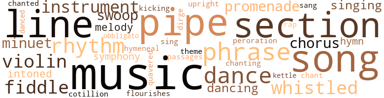
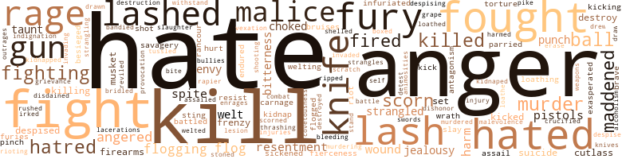

122 music-related terms matched in this text.
Most frequent terms in this topic: music (12); section (7); pipe (7); line (6); dance (6)

chant.n.01
Definition: a repetitive song in which as many syllables as necessary are assigned to a single tone
| word |
sentence |
| chant |
The old woman 's voice was a chant of solemnity and dignity . |
chorus.n.01
Definition: any utterance produced simultaneously by a group
| word |
sentence |
| chorus |
And at its sound , the slaves , trudging off to the woods for the winter 's chopping , watched a cavalcade of color sweep from Lanrick Shannon 's white-pillared man - sion amid a chorus of shouts and halloes behind a howling pack of beagles . |
| chorus |
And thoroughly enjoying the clash sat dame Fenwick , her snigger a sardonic chorus . |
| chorus |
And invariably a chorus of snuff-slobbered cackles would accompany these sallies . |
cotillion.n.01
Definition: a ball at which young ladies are presented to society
| word |
sentence |
| cotillion |
He wanted to escort her to the bachelor 's cotillion , he said . |
dance.n.01
Definition: an artistic form of nonverbal communication
| word |
sentence |
| dance |
" I suppose , " she ventured , " ye number the dance among your accomplishments ? " |
| dance |
" Aye , 't is so , I think , from what I hear , " said Josiah who was impatient to be off with Louisa to the dance , " Come , Mistress Shannon , I must return you to the line so that you may delight the assembly further wi ' your charm and grace . |
| dance |
" Ye leave tomorrow . . . . " Pierre had not attempted to rejoin the dance , heading instead for the exit while he talked swiftly and bowed to left and right . |
| dance |
It was the body for the long safari , or the hand-to-hand jungle strife , or the interminable tribal dance . |
| dance |
It was that welcoming of a dangerous challenge by one who had abun - dance of physical courage and the will to conquer whoever defied him . |
dance.v.03
Definition: skip, leap, or move up and down or sideways
| word |
sentence |
| dancing |
And if you 've ambitions in that direction , you 'd better be rid o ' them quickly , or you 'll find yourself dancing at the end of a rope ! " |
| dance |
" I look like one of the Three Weird Sisters - all I need is a heath to dance on and a cauldron to stir ! |
| dancing |
James gazed off through the lights and shadows dancing on the thick underbrush which had overgrown Hubert De - laney 's slave kraal . |
| dancing |
Yonny de p ' intl " The piping voice of the naked little black boy dancing his excitement brought Mariah 's fury to a pause . |
| danced |
And they mouthed of liberty and the rights of maul And stuffed themselves to goutiness and drank themselves to slobbery indecency and danced in fine silks and satins smuggled by him through the blockade ! |
dirge.n.01
Definition: a song or hymn of mourning composed or performed as a memorial to a dead person
| word |
sentence |
| dirge |
And its music will be a symphony of life and not a dirge of death ! " |
flourish.n.05
Definition: (music) a short lively tune played on brass instruments
| word |
sentence |
| flourishes |
Mariah finally dipped her cpiill and scrawled in mannish flourishes upon the folded paper : Mariah Shannon Certificate of IIosea Delaney Freedom Over this she sifted some drying powder , smiling secretly at the ironic quirk which had prompted her to bestow Hu - bert Delaney 's name upon his bastard . |
hymeneal.n.01
Definition: a wedding hymn
| word |
sentence |
| hymeneal |
A new love had sprung from roots once thought too seared by hate , and November of that year , with its full hymeneal moons , was fitting time to hail that love 's consummation . |
hymn.n.01
Definition: a song of praise (to God or to a saint or to a nation)
| word |
sentence |
| Hymn |
When the " Ashes to Ashes and Dust to Dust " be finish 'd the Picture had an End in the Harmonie of negro Voices lift 'd in a Hymn of Resignat ' n , taught Them , one was led to suppose , at the Behest of the Depart 'd . |
| hymn |
He hurried on until he came to a house from which came the blending of voices raised in a hymn . |
kettle.n.04
Definition: a large hemispherical brass or copper percussion instrument with a drumhead that can be tuned by adjusting the tension on it
| word |
sentence |
| kettle |
Lize watched Delilah fill the pitcher from a copper kettle within the fireplace , and from out the sourness of her thoughts she said : " Ye can fetch some water to take the place o ' that ye 've took ! " |
kick.v.04
Definition: kick a leg up
| word |
sentence |
| kicking |
Through a red haze as he clawed Garrett 's throat , James saw Prince , his neck unhaltered , shake himself momentarily free and run amuck , butting and kicking like a maddened bull . |
minuet.n.01
Definition: a stately court dance in the 17th century
| word |
sentence |
| minuet |
At the far end , a stringed ensemble of Negroes scraped out an indifferent minuet for the pivot - ing and bowing lines of dancers . |
| minuet |
He had cursed the black fiddlers into a minuet and teetered its solemn grace until white-faced Jamie had dragged the pair away between rows of shocked whisperers . |
| minuet |
She nodded toward the interior of the house where fiddles scraped a minuet . |
music.n.01
Definition: an artistic form of auditory communication incorporating instrumental or vocal tones in a structured and continuous manner
| word |
sentence |
| music |
Louisa could not see his face , but there was a melan - choly music in his voice . |
| music |
She drank in the music through every pore . |
| music |
" Forgive me , " she murmured , " but the music - ' twas so full of beauty and peace . " |
| music |
Whence comes the loneliness that possesses your face and made me call a halt when I saw the peace which music brought to it ? ' |
| music |
What boots it if I tread the borderland of your passion but never tra - verse the unexplored terrain beyond , of which I caught a shining glimpse when you listened to my music ? " |
| music |
Though the music was inferior , the assembly was colorful , with its powdered heads , its variegated pattern of hues in the trailing gowns of the ladies and its formal black and white of civilian gal - lants and burghers clashing against the brilliance of the officers ' regimentals . |
| music |
And she had not known when the music stole away . . . . |
| music |
And its music will be a symphony of life and not a dirge of death ! " |
| music |
" You 'll have no music from these two , I 'll wager ! " |
| music |
Listen at the music ! " |
| music |
" Listen at the music ! " |
| music |
He left her as Hubert Delaney staggered toward them , goblet in hand , and the fiddlers resumed their music . |
musical_instrument.n.01
Definition: any of various devices or contrivances that can be used to produce musical tones or sounds
| word |
sentence |
| instruments |
Though he saw their humanity and recognized it as such , the slaves under him were primarily his means of personal gain ; therefore , they must be efficient instruments . |
| instrument |
She watched with inner anger the unfolding of the ambition to which , she now realized , she had been but an instrument of satisfaction . |
| instrument |
It combined medium weight with a maximum of power and was as true to the sight as any hand-wrought instrument could be . |
| instrument |
Twill not come in our time - for this nation is very young , as nations go - but I do believe that beyond the portals of this present in the not too far-off to be , there will stand in the place of this rudimentary instrument whose utterance is as yet unformed , a mighty organ rearing its pipes high in the nave of the world 's cathedral of civiliza - tion and rendering a harmony undreamed of , to which man - kind will move in spontaneous unison . |
obbligato.n.02
Definition: a part of the score that must be performed without change or omission
| word |
sentence |
| obbligato |
Then the dull clank of chains and muffled moans wove an obbligato to commands issued in the harshness peculiar to humans vested with sudden power over the defenseless : " Up wi ' ye now , ye black spalpeens ! " |
passage.n.06
Definition: a short section of a musical composition
| word |
sentence |
| passages |
Things are still un - settled in San Domingo , and passages are not frequent now between here and the island . |
peroration.n.02
Definition: (rhetoric) the concluding section of an oration
| word |
sentence |
| peroration |
This extempore peroration left James trembling on the emotional heights he had ascended . |
phrase.n.02
Definition: a short musical passage
| word |
sentence |
| phrase |
Hackneyed though the phrase , it quickened Louisa 's blood to riot , so far gone in hungered longing had she become . |
| phrases |
Why , he could even forgive Louisa 's silly notion of enforced chastity made more onerous by her repetition of phrases in its defense - phrases , mind you , which he had taught her of inane balderdash about the " spiritual " in love ! |
| phrases |
She fixed her cold black hatred upon him and erupted an unintelligible flood of phrases , her right hand trembling from his red crest to his seaman 's boots . |
| phrases |
" Tut , child - mind your manners , " retorted Dame Eliza - beth , tonguing her gums between phrases as she rambled on . |
| phrases |
One tires of empty phrases and enthusiasms and foibles - how to frizzle or coil one 's hair , the correct cut of a waist - coat , the correct posture for side-saddle , the latest fashion from abroad , or worse still , some cause sentimental ! |
| phrase |
I 've found little in the world to desire - up to now . . . . " James sought explanation of this last phrase in her face , but it remained inscrutable . |
| phrase |
How 's that for a well-turned phrase , O budding bardling ? |
pipe.n.04
Definition: a tubular wind instrument
| word |
sentence |
| pipe |
" But , Sophia , dear - I - " Doctor Will 's Puritan blood flooded his honest young face , and he lighted his after - dinner pipe to cover his confusion . |
| pipe |
She had shifted her long-stemmed , carved pipe and pulled in meditation , seeming to forget the children at her feet . |
| pipe |
She bent forward and waved the stem of her pipe . |
| pipe |
She pulled on the pipe . |
| pipe |
The pipe billowed her scorn . |
| pipe |
Darkly austere , she sat beside her fire - place beneath the hanging herbs and smoked her long - stemmed pipe as impassively as if she had expected her visitor . |
| pipes |
Twill not come in our time - for this nation is very young , as nations go - but I do believe that beyond the portals of this present in the not too far-off to be , there will stand in the place of this rudimentary instrument whose utterance is as yet unformed , a mighty organ rearing its pipes high in the nave of the world 's cathedral of civiliza - tion and rendering a harmony undreamed of , to which man - kind will move in spontaneous unison . |
| pipe |
He lighted a long clay pipe and puffed his musings into languid wreaths of blue . |
promenade.n.01
Definition: a formal ball held for a school class toward the end of the academic year
| word |
sentence |
| promenade |
This section seemed a promenade for brocaded ladies of hoops and loops and curls and cushioned coiffures topped by feathered hats . |
| promenade |
The balmy afternoon had called forth its usual Sab - bath promenade along renamed Baltimore street which the townsmen persisted in calling " Market Street . " |
| promenade |
Even the spectacle of the promenade still in progress could not distract them from their vigilance or diminish their fears . |
rap.n.05
Definition: genre of African-American music of the 1980s and 1990s in which rhyming lyrics are chanted to a musical accompaniment; several forms of rap have emerged
| word |
sentence |
| rap |
The company finally came to order under the rap of Bullock 's gavel . |
rhythm.n.04
Definition: the arrangement of spoken words alternating stressed and unstressed elements
| word |
sentence |
| rhythm |
With a steady rhythm the thongs whistled and bit into flesh . |
| rhythm |
Uncle Peter buried a portion of the rim beneath the coals on the forge and turned the bellows with a practiced rhythm . |
| rhythm |
She stared in - stead at the oily rhythm rippling the sloped V of Prince 's naked back . |
| rhythm |
Across the harrowed blackness of the fields on either side of the lane , hoe-gangs stroked measured rhythm behind their young who dropped the corn kernels to be hilled . |
| rhythm |
It was a hate that throbbed a jungle rhythm at his eye - balls and temples from a distant , yet familiar drum . |
section.n.01
Definition: a self-contained part of a larger composition (written or musical)
| word |
sentence |
| section |
This section seemed a promenade for brocaded ladies of hoops and loops and curls and cushioned coiffures topped by feathered hats . |
| section |
The right section was given over to small booths with room enough for a couple each . |
| section |
Doctor Will awaited her swift defense of her native section . |
| section |
A relative of the far-flung and prolific Delacey clan ( - " a family with a branch in every section of the state to which it has contributed so many illustrious sons , " writes one an - nalist ) had been present at the Lafayette ball in Baltimore . |
| section |
And when he came to the city some years ago to see the effects of the yellow fever epidemic , we de - termined upon a plan of procedure , though he vows his task is well nigh insurmountable in his locality as the en - tire section is dependent largely on slave labor , being agri - cultural in the main . |
| section |
" I believe our Lowlands are the most backward section of the nation , what with one way of life - the soil for the land owners and the water for the landless . |
| section |
Now that I think on it , the entire section seems cut off from the rest of the state by the Bay ; and though 't is neighbor to Delaware , little meaningful intercourse takes place between them - except , perhaps , when a fox leads the hunt across the line . . . . " " Aye , " nodded Emile pursuing his own thought , " 't is like a young man of promise , this Mary 's land - much promise , but little fulfillment . . . . |
sing.v.02
Definition: produce tones with the voice
| word |
sentence |
| sing |
And I hear the songs they sing . |
| sang |
Her blood sang . |
singing.n.01
Definition: the act of singing vocal music
| word |
sentence |
| singing |
She nodded contempt at the bevy of naked and near - naked youngsters busy at their singing and dancing ring game . |
| singing |
He was glad to come to the door where he had heard the singing . |
| singing |
Well , I walked through this street yesterday and heard your congregation singing . |
song.n.01
Definition: a short musical composition with words
| word |
sentence |
| songs |
And I hear the songs they sing . |
| songs |
'T is more to their songs than meets the ear , ma'am . |
| song |
That year the black earth of Shannon Landing bloomed fabulously , and song mingled with the labor of the gangs , for the whip of Big Jonas seldom tasted flesh . |
| song |
And she placed the note in her bosom and left with never a backward glance , a song of spring in her heart answering that of the orioles as she sat in the coach along the road to Baltimore town . |
| songs |
But that bright morning in November when the songs of the held gangs mingled with the baying of hounds at the chase , Louisa was roused from her half-hearted perusal of accounts in the library by a hubbub progressing up the lane from the Neck Road . |
| song |
Upon the stroke of twelve , just as the merrymakers were about to welcome the young year with a song , into the ballroom had staggered Hubert Delaney , a painted tavern wench on his arm , and he slobbering down the front of his greatcoat like any puking infant ! |
| song |
And as they toiled , snatches of song doleful of beat and poignant of word , paced the rise and fall of their hoes : Some o ' dese da-ays , Lor ' - or ' - haanhl Some o ' dese da-ays , Lor ' - or ' - haanhl I gon na drap dis heavy hoc - haanhl I gon na rise up in de mo ' nin ' - haanhl An ' run-a to de settin ' sun - haanhl An ' I ain ' , Lor ' - or ' - gon na hoe no mo ' - haanhl The unaccountable sadness those songs of the slave gangs had always aroused in him now fell upon James as he rode along . |
| songs |
And as they toiled , snatches of song doleful of beat and poignant of word , paced the rise and fall of their hoes : Some o ' dese da-ays , Lor ' - or ' - haanhl Some o ' dese da-ays , Lor ' - or ' - haanhl I gon na drap dis heavy hoc - haanhl I gon na rise up in de mo ' nin ' - haanhl An ' run-a to de settin ' sun - haanhl An ' I ain ' , Lor ' - or ' - gon na hoe no mo ' - haanhl The unaccountable sadness those songs of the slave gangs had always aroused in him now fell upon James as he rode along . |
swoop.n.01
Definition: (music) rapid sliding up or down the musical scale
| word |
sentence |
| swoop |
And that firm prow of chin and swoop of nose indelibly stamped her as Lanrick Shannon 's daughter . |
| swoop |
Atop it Lanrick perched his crowning insolence : an iron escutcheon two feet high , blazoned in copper , with a swoop - ing eagle clutching the shackled head of a Negro as its crest . |
| swoop |
In the lantern light his gaunt , strongly boned face , with its nose of hawk 's swoop and its eye of the eagle 's gray , was devil-may-care and hardened by the sardonic curve of thin lips and pronounced jut of red-bristled chin . |
symphony.n.01
Definition: a long and complex sonata for symphony orchestra
| word |
sentence |
| symphony |
May - hap a symphony to compose and try a serious poetic com - position . . . . |
| symphony |
And its music will be a symphony of life and not a dirge of death ! " |
theme.n.03
Definition: (music) melodic subject of a musical composition
| word |
sentence |
| theme |
It had been Hubert Delaney 's theme for many a long-winded speech delivered to Mariah , Perry , and himself . |
tone.v.01
Definition: utter monotonously and repetitively and rhythmically
| word |
sentence |
| intoned |
Doctor Will intoned the oft-quoted passage with mock fervor . |
| chanting |
The Gaiter 'd and portly Prelate whose sleek jowl 'd Countenance reflected the somberness of his Vestments as well as that of his Task , chanting from the Prayer Book prop 'd upon his Stummick like as if the latter be a moving Lectern ; the six stalwart Blackes bear - ing the crep 'd Coffin of their beloved Master and Friend ; the bereev 'd Familie ( Alas ! |
| chanted |
Jo 's mammy 's a white man 's whorel " Derisively they chanted the taunt . |
| intoned |
" Thy servant hath heard the dream , " intoned James , still mocking . |
tune.n.01
Definition: a succession of notes forming a distinctive sequence
| word |
sentence |
| line |
And the adjoining wall was serpentined by a thin line that crept ceilingward . |
| melody |
At the farthest wall of this cloister for tete-a-tete a black fiddler in satin wove from his dais a barely audible pattern of melody . |
| melody |
As an echo from afar , soft melody throbbed the room , a strange mixture of joy and sadness . |
| lines |
At the far end , a stringed ensemble of Negroes scraped out an indifferent minuet for the pivot - ing and bowing lines of dancers . |
| line |
Compliment after compliment was whispered into her ear until she managed a gracious smile even when Josiah Potts bobbed up in line , a bewigged rabbit on the black sheathed legs of a crow . |
| line |
" Oxford 's for gentlemen 's sons , and if I miss not my guess , there 's been no gentlemen in the Delaney or Shannon line ! |
| line |
Every line of her body drooped its simulated grief . |
| line |
Expertly she threw the fragmented line as an inspired ingenue . |
| lines |
Proud-spirited Caesar had no cause to resent the comparison of his thoroughbred lines with those of his mistress 's coach . |
| line |
It seemed as if this week 's also would disappoint him as he struggled , letter by letter and line by line , within the stable . |
upright.n.02
Definition: a piano with a vertical sounding board
| word |
sentence |
| upright |
Prince swung her upright and stepped back to mock with cold , slated eyes . |
violin.n.01
Definition: bowed stringed instrument that is the highest member of the violin family; this instrument has four strings and a hollow body and an unfretted fingerboard and is played with a bow
| word |
sentence |
| violin |
" Again , think what effect such a practice would have upon one 's skill at the violin , not to speak of the round shoulders it brings ! " |
| fiddle |
" And , Captain , shall I send your fiddle after the dinner ? " |
| violin |
But she smiled , though somewhat wanly , when Pierre re - turned , violin in hand . |
| violin |
Each dish of food , each glass of wine , each snatch of spontaneous poetry that Pierre had murmured , and each quivering cry from the violin of the black fiddler stationed by Pierre in the adjoining room to play continuously until signaled to stop - all these and more were her memories . |
| violin |
Even Clarissa Delacey put aside her prejudice after Pierre had thrilled her guests with an impromptu violin recital during an evening of amateur theatricals which she had sponsored in his honor . |
| fiddle |
" Marse Hubert ai n't after playing second fiddle to no nigger - I know ! " |
| fiddles |
She nodded toward the interior of the house where fiddles scraped a minuet . |
| fiddles |
Lize got up to sway and bow and curtsy somewhat unsteadily in time to the fiddles . |
warble.v.01
Definition: sing or play with trills, alternating with the half note above or below
| word |
sentence |
| quavered |
" God gone smite ' er , " quavered Lize from her stool . |
whistle.v.01
Definition: make whistling sounds
| word |
sentence |
| whistled |
With a steady rhythm the thongs whistled and bit into flesh . |
| whistled |
He stole from his rapt sister and whistled twice at the back of Granny Sula 's cabin where a slim black boy joined him . |
| whistled |
But he whistled a merry air as he mounted his horse and thrust a small object into the pocket of his waist - coat . |
| whistled |
His throat burned and his lungs whistled their agony . |
533 violence-related terms matched in this text.
Most frequent terms in this topic: hate (46); anger (30); fight (20); kill (20); hated (15)

abhor.v.01
Definition: find repugnant
| word |
sentence |
| loathed |
How she loathed the brute ! |
| loathe |
I 'm cer - tain you 'd loathe having your lady 's dainty shoes splashed by the mud of Apple Alley ! |
abhorrence.n.01
Definition: hate coupled with disgust
| word |
sentence |
| loathing |
Hosie leaned forward in his vehemence , some - thing of loathing about his thick lips . |
| loathing |
James retreated and looked his loathing at her . |
abrasion.n.01
Definition: an abraded area where the skin is torn or worn off
| word |
sentence |
| scratch |
" Safe after a rough trick of it and only one scratch to show . " |
aggravation.n.02
Definition: unfriendly behavior that causes anger or resentment
| word |
sentence |
| provocation |
His Fenwick sensitivity catching its cue , James quickly pursued his advantage : " However , " he said , " it must be stated that our friend has not acted entirely without provocation . |
alcoholism.n.01
Definition: habitual intoxication; prolonged and excessive intake of alcoholic drinks leading to a breakdown in health and an addiction to alcohol such that abrupt deprivation leads to severe withdrawal symptoms
| word |
sentence |
| alcoholism |
He was in dour mood after having treated Mariah for acute alcoholism and the bruises purpling her body . |
anger.n.01
Definition: a strong emotion; a feeling that is oriented toward some real or supposed grievance
| word |
sentence |
| anger |
Louisa 's anger vanished . |
| anger |
As he faced his wife , Will 's anger gave way to a mischie - vous self-satisfaction at this , his first victorious tilt with Cecil . |
| anger |
Now he was charged with anger . |
| anger |
He will teach thee out of anger . |
| anger |
The big anger vein welted the middle of her high , narrow forehead . |
| Anger |
" And now you talk of manumission . . . . " Anger and hate displaced the loneliness . |
| anger |
Mariah stamped in anger . |
| anger |
Mariah 's giggles augmented his anger . |
| anger |
And her anger was increased by the knowledge that it had taken a black - one of her own slaves ! |
| anger |
In that moment Mariah 's face shed its fright and anger for puzzled wonder . |
| anger |
James ' adolescent croak had chopped to mock - anger bass . |
| anger |
James ' voice as he sat his sorrel was hoarse with anger . |
| anger |
She watched with inner anger the unfolding of the ambition to which , she now realized , she had been but an instrument of satisfaction . |
| anger |
- had always hated her for her white-eyed fear which she had imparted to him from childhood ; her eternal cringing ; her utter submission before the tyranny of his blustering father-master who had come to scorn them both for it ; her fear of incurring the old bully 's anger by nagging him until out of sheer weariness he would have granted them freedom as many masters in the County had done for their black concubines and children ; and above all , her fear of freedom itself . |
| anger |
Fear ambushed her anger . |
| anger |
Mariah stamped her anger . |
| anger |
And there they stood , as in their childhood , spitting their anger like cats whose trails have crossed too often . |
| anger |
Sula puffed her anger . |
| anger |
He rushed his anger from the room . |
| anger |
" So I 'm to be bought with a trifle ? " he growled , the big anger vein welting his temple . |
| anger |
" A'nt Harriett speaks the truth , " she said in the flat mono - tone of her anger . |
| anger |
She stood with her half-bloomed pregnancy and her anger heightening her color to flamed copper . |
| anger |
He stiffened , anger and laughter incongruously rioting within him to compromise in satire . |
| anger |
When he stood so , Mariah 's anger rose further because he so strikingly resembled her brother Perry . |
| anger |
Six matched demons they were now with anger feeding their thundering energy . |
| anger |
He waited , un - certain , a sweated eagerness mingling with incongruous anger tormenting him . |
| anger |
That incongruous anger lashed his eagerness to a maddened pitch . |
| anger |
The night-and-a-day journey had left its mark on her , he noted , though she had borne it in silence - a silence , he knew , which was also a sign of her anger , unrelenting since their flight from Shannon Landing . |
| Anger |
Anger glowed Cindy 's high cheeks . |
| anger |
In his anger Garrett suddenly slacked the halter and lashed Prince 's face with the end of it . |
| anger |
Lize 's mouth twisted in anger . |
| anger |
Lanrick looked sardonically until Louisa rushed up to him , her face pale in anger . |
anger.v.02
Definition: become angry
| word |
sentence |
| angered |
The resemblance angered her this morning . |
| angered |
It angered her . |
| angered |
The disclosure angered her . |
| angered |
The misgivings angered him ; his smile faded . |
| angered |
" If you will murder , you 'll do other . . . . " " What is it you want ? " demanded Mariah , angered that Phyllis had put a finger upon an aching sore . |
| angered |
Allusions to his femininity always angered him . |
| angers |
There 's nothing angers her more than to think she 's laughed at - " " 'T is true , " put in Delilah . |
| angered |
And the fact that this was true angered him the more . |
animosity.n.01
Definition: a feeling of ill will arousing active hostility
| word |
sentence |
| animosities |
And the petty envy and animosities with their sly tattlings to the over - seer at Shannon Landing had justified her counsel . |
annoyance.n.02
Definition: anger produced by some annoying irritation
| word |
sentence |
| vexation |
Louisa blushed , vexed at her own vexation . |
attack.v.01
Definition: launch an attack or assault on; begin hostilities or start warfare with
| word |
sentence |
| assail |
His seaman 's voice would assail the buyers as he paraded the " lots " upon the auction platform , the tavern porch . |
| assail |
Pierre kept up a running fire of small talk , mixed with subtle flattery while he watched her assail the food to the point of picking the bones . |
| assailed |
These and other sly whispers assailed the lounging Mon - tague who grinned his good humor and thanked heaven the boy had succeeded in restoring a more receptive at - mosphere to the gathering . |
bandy.v.02
Definition: exchange blows
| word |
sentence |
| bandied |
It was to be forgotten , not to be bandied here . |
battle.v.01
Definition: battle or contend against in or as if in a battle
| word |
sentence |
| battled |
Through supreme will she kept her seat and battled the nausea of fear sweep - ing her . |
| battle |
Yet , born and bred to the slave manor , he suffers a youthful tragedy , exiles himself abroad , and returns fired with a zeal to battle the very thing which gave him origin , so to speak . . . . |
| battled |
... A captive chieftain battled half a crew before they subdued him and his mate . . . . " Prince remained a silently watchful figure , apparently unmoved from suspicion . |
besiege.v.01
Definition: surround so as to force to give up
| word |
sentence |
| besieged |
Soon old David Cooper was besieged with orders for variation of Mariah 's carriage ( " chariot '' the slaves called it ) . |
| besieged |
Chalky of face , the besieged girl stalked along on stiff legs trying to ignore her train of tormentors until a handful of dirt sprayed her rusty pigtails . |
blast.v.03
Definition: use explosives on
| word |
sentence |
| shelled |
As he strolled the narrow footway - bricked or shelled or graveled according to the choice of the burgher before whose home it passed - he took particular note of the passersby and the dwell - ings to discover the nature and temper they expressed . |
bleeding.n.01
Definition: the flow of blood from a ruptured blood vessel
| word |
sentence |
| bleeding |
When he wanted a hand flogged , he had it done methodi - cally by Big Jonas , whom he had singled out to be a driver , he never poured brine over a bleeding back , but rubbed a healing salve over the lacerations , advising the miscreant not to make such necessary again . |
box.v.03
Definition: engage in a boxing match
| word |
sentence |
| boxed |
When she came abreast of Louisa , the latter boxed her ears resoundingly , and down the stairs sprawled Callie to spread-eagle over the offending stain . |
bridle.v.01
Definition: anger or take offense
| word |
sentence |
| bridled |
The un - bridled mare ! |
bruise.n.01
Definition: an injury that doesn't break the skin but results in some discoloration
| word |
sentence |
| bruises |
Experience had taught him the meaning of those seeking eyes , and he had no relish for further bruises from any chance object Mariah might snatch up . |
| bruises |
He was in dour mood after having treated Mariah for acute alcoholism and the bruises purpling her body . |
contemn.v.01
Definition: look down on with disdain
| word |
sentence |
| scorn |
Lanrick 's laugh was a bellow of scorn as he nudged Delaney . |
| despised |
The hands found him the direct antithesis of Marse Jeff , whom they had hated and despised . |
| scorn |
And at that , 't is a witch I believe she be . . . " Lanrick laughed his scorn . |
| scorn |
he of the black curls and the quick , devil-may-care smile so assured ; he who had laughed down the tyranny of family and risked social scorn for love of her , Mariah Shannon of Shannon Landing , even after the nightmare of the Ball . . . . |
| despise |
I despise a deceitful nig - ger grin ! |
| disdained |
Having delivered this dictum , she climbed back to her perch upon the bay and disdained further notice of any one . |
| scorn |
The pipe billowed her scorn . |
| despised |
Then , to her self-disgust , she found herself retaliating in despised feminine fashion : " I had come , '' she lied icily , " to tell you that my maid Cindy spoke of marriage with you . |
| scorn |
Prince laughed his scorn . |
| scorn |
- had always hated her for her white-eyed fear which she had imparted to him from childhood ; her eternal cringing ; her utter submission before the tyranny of his blustering father-master who had come to scorn them both for it ; her fear of incurring the old bully 's anger by nagging him until out of sheer weariness he would have granted them freedom as many masters in the County had done for their black concubines and children ; and above all , her fear of freedom itself . |
| despised |
Such an one is your despised Jefferson . |
| despising |
It reminds one of the house servant despising the field hand , eh ? ' |
| scorned |
She scorned the kitchen now cluttered with scraps from the dinner - the carcasses of fowl native to the tidal Lowlands and the vegetable yield of the rich black earth of Delafield and Shannon Landing , a garish display of plenty for plenty 's sake . |
| scorn |
None escaped , for each feared the scorn of his fellows . |
covetousness.n.01
Definition: an envious eagerness to possess something
| word |
sentence |
| covetousness |
Full of vigor , Bullock looked with no uncertain covetousness upon the fair Delia . |
craze.n.02
Definition: state of violent mental agitation
| word |
sentence |
| frenzy |
The casual growth of a drunken frenzy , the relationship took root . |
| frenzy |
In a frenzy he ripped out the advertisement . |
| frenzy |
Then it was that mad frenzy shot James into action . |
crucify.v.01
Definition: kill by nailing onto a cross
| word |
sentence |
| crucified |
The crucified Christ has been made to serve the ends of ignorance and tyranny ! |
cutlas.n.01
Definition: a short heavy curved sword with one edge; formerly used by sailors
| word |
sentence |
| cutlass |
Garrett rushed to his cabin , gathered up his pistols and cutlass . |
| cutlass |
Garrett grasped his cutlass tighter and sprang to - ward Prince . |
| cutlass |
They stalked the gunwale , Prince flexing his chain , Garrett brandishing his cutlass . |
defy.v.01
Definition: resist or confront with resistance
| word |
sentence |
| withstand |
My assertion is that if this nation , so visioned and formed as it is , admits that it can not take unto itself any element of humanity and make of it an harmonious part of its whole , then this na - tion can not hope to withstand the shocks and vicissitudes which time will bring to it ! |
destroy.v.04
Definition: put (an animal) to death
| word |
sentence |
| destroy |
But it will not root out the one evil that will eat into its heart like a canker - mayhap someday destroy it . |
| destroy |
But the very dread the old man had expressed had served to destroy for James the sense of superiority that Hubert Delaney had wanted to engender in them . |
| destroyed |
Her passion-fed illusion had been destroyed . |
| destroy |
And he contends further that the presence of any tyranny in a supposed democracy , such as we boast , sullies that de - mocracy and will produce a chancre which will in time destroy it . |
draw.v.23
Definition: pull (a person) apart with four horses tied to his extremities, so as to execute him
| word |
sentence |
| drew |
Unconsciously his lips curled with the dis - gust of satiety , and his thick shoulders drew up as from the touch of a clammy hand . |
| drawn |
Squire Norton , barrister to the rich and well-to-do of the County , had read Hubert Delaney 's will , drawn up a docu - ment that caused him some surprise and subject for gossip , and departed with his secretary and partner who had acted as witnesses . |
| draw |
I 'm off now to draw up the papers . " |
enrage.v.01
Definition: put into a rage; make violently angry
| word |
sentence |
| enrages |
And it should not have happened , were it not that I have pity in my heart , which enrages me , for you now and all those women who have lived and must live in this ugliness of slavery . " |
envy.n.01
Definition: a feeling of grudging admiration and desire to have something that is possessed by another
| word |
sentence |
| envy |
No doubt envy and malice would have had their say in any event . |
| envy |
Mariah did gain one satisfaction from her shifting of Prince to his role of coachman : she evoked the envy of those socially elite of the County who had so long snubbed her . |
| envy |
Tubal had been listening in envy . |
| envy |
And the petty envy and animosities with their sly tattlings to the over - seer at Shannon Landing had justified her counsel . |
erase.v.01
Definition: remove from memory or existence
| word |
sentence |
| erase |
She sickened rapidly , for despite Doctor Will 's advice to the contrary she continued drinking to erase the grim reality of her condition from her mind . |
ferocity.n.01
Definition: the property of being wild or turbulent
| word |
sentence |
| fierceness |
" Thou art a prince ! " she repeated with fierceness . |
| fierceness |
Prince 's fierceness brought a look of approval from Delilah . |
fight.n.02
Definition: the act of fighting; any contest or struggle
| word |
sentence |
| combat |
Only grunts and heavy pants rose above the combat . |
| fighting |
If there were trouble and fighting , Prince would be given unwanted notice . |
fight.n.05
Definition: a boxing or wrestling match
| word |
sentence |
| fights |
Naw , ai n't no freedom for us ' less we fights for it , and we 's too scared o ' dying for that ! " |
| fight |
Tell ' er ye 're fight - ing wi ' a nigger and fending for ' im when he 's impudent ! " |
| fight |
I want to know - " " You want to know whether or not you are justified in throwing yourself into the fight for emancipation , " inter - rupted Parson John shrewdly . |
| fight |
They was a fight ! |
| fight |
The survivors , drained of fight , scrambled for the hatches and the companionway . |
| fight |
The fight was futile . |
| fight |
Tist the best way to keep up the fight ! " |
| fight |
I shall never falter in this fight until I am dead or until this evil be wiped from the earth forever ! " |
fight.v.02
Definition: fight against or resist strongly
| word |
sentence |
| fighting |
Got to saying if the whites be fighting for freedom , slaves ought light for they freedom . |
| fought |
iv Doctor Stevens fought death to a standstill over Callie 's wasted body . |
| Fought |
Fought like bush cats , they did . |
| fight |
They reap the benefits while our shivering wretches go half-starved to fight for them and their fat wives and silken daughters and foppish sons who pay substitutes to face the enemy ! |
| fight |
'T is the thing I shall fight for if I return . |
| fight |
I shall fight - " ' And have your head bashed for recompense ! " |
| fight |
Ye got to fight to be free , like them Injuns my gal run off to . |
| fight |
How dast ye fight young master ! " |
| fight |
Louisa no longer had will or substance to fight the disease she had contracted . |
| fought |
Within the year Jamie fought five duels which he forced upon opponents , two with swords and three with pistols . |
| fought |
Hosie fought for mastery of his blunt features . |
| fight |
How ye gone plan and fight together ? " |
| fought |
When a buckra woman like Miss Mariah take a notion she want anything - ai n't no turning back . . . . " Prince frowned while the implication of Uncle Peter 's warning fought for recognition . |
| fought |
She fought the scream that rose to her white lips as Hosie came to his feet , arms pendulous , and lurched toward the side door . |
| fighting |
You can depend upon it - Edward 'll never make the mistake of actually fighting with the regiment . |
| fight |
For me there is but one course - to fight that which I hate in my time and live a free man or die becoming one ! |
| fought |
James looked up from his reverie and fought the grimace invoked by Perry 's affected drawl . |
| fighting |
" Mariah , " he whispered , fighting for calm . |
| fought |
They fought . |
| fought |
The battle had been fought and lost in the room above . |
| fought |
If we do not , then I and thousands like me , who fought and bled and died to establish this nation , will have fought and hied and died in vain ! " |
| fought |
If we do not , then I and thousands like me , who fought and bled and died to establish this nation , will have fought and hied and died in vain ! " |
| fought |
He fought , but lost the bat - tle with himself . |
| fought |
" We have fought and bought with blood this land for ourselves and children - let these blacks do likewise if they be men worthy of freedom and their fellow men 's respect ! |
| fought |
" 'T is the land where black men have fought and died for freedom ! |
| fight |
You talk like a sniveler , a whiner too weak to fight for what he wants ! |
| fought |
I 'll tell you : ' twas because you fought me even when you knew I had but to speak to have you flogged . |
| fighting |
It is not worth fighting for ? |
| fight |
I tell you that you have two choices : either you can slay here and fight for the right of all men to be free , or you can embark for a land where you think that freedom 's ready-made for those you selfishly consider your own kind ! |
| fighting |
Why , 't is said the free people of color be fighting side by side in the north wi ' their white brethren in the cause o ' freedom ! " |
| fight |
" Are we free women or are we animals to fight so among ourselves ? " |
| fighting |
Mister Bullock will not like fighting in his yards . . . . |
| fought |
He rushed upon Garrett with an animal snarl that came from ages when the world was young and men fought tooth to tooth . |
| fighting |
" As you all know , " he continued , " Mister Shannon is still fighting for his life as the result of injuries he received in the cause he had dedicated himself to . |
| fight |
" As for me , I shall fight beside Mister Shan - non - God willing that he be spared - fight this evil with all my strength and all my worldly goods . |
| fight |
" As for me , I shall fight beside Mister Shan - non - God willing that he be spared - fight this evil with all my strength and all my worldly goods . |
firearm.n.01
Definition: a portable gun
| word |
sentence |
| firearms |
The very next morning after his assuming his duties as hostler-coachman , Mariah came for her horse carrying a fine , silver-mounted fowling piece which had been among Lanrick Shannon 's prize collection of firearms . |
| firearms |
You must not use it on any but our land , though , as 't is against the law for sla - " she changed the word - " for servants to possess firearms . |
| firearms |
Men scurried to posts with firearms and coiled whips at the ready . |
flog.v.01
Definition: beat severely with a whip or rod
| word |
sentence |
| flogged |
When he wanted a hand flogged , he had it done methodi - cally by Big Jonas , whom he had singled out to be a driver , he never poured brine over a bleeding back , but rubbed a healing salve over the lacerations , advising the miscreant not to make such necessary again . |
| welting |
A lazy smile crossed his young face , softening the scar welting his left cheek from sleepy black eye to clefted chin . |
| flog |
" Oh , Lor ' , missie , " she cried , " do n't flog me ! |
| flogging |
This made possible the dual flogging with economy of motion , for Garrett used a for - ward stroke upon Jonas and a backhand stroke upon the woman so that the force of one blow automatically gener - ated the force of the other . |
| flog |
" Do n't ye dast flog Prince , Garrett ! " |
| flog |
And I ai n't a-lettin ' no scum o ' the sea flog ' im ! |
| flog |
" And I 'll tell Mama ye tried to flog me ! " |
| welted |
The big anger vein welted the middle of her high , narrow forehead . |
| flogging |
" Who is saved from flogging by howling Jesus and Lord , Lord ? |
| welting |
" So I 'm to be bought with a trifle ? " he growled , the big anger vein welting his temple . |
| flogged |
I 'll tell you : ' twas because you fought me even when you knew I had but to speak to have you flogged . |
| flog |
" Gone flog that gal , big as she be wi ' child ! |
| flog |
" He 'll not flog me , " she stated with a toss of her head . |
fury.n.01
Definition: a feeling of intense anger
| word |
sentence |
| fury |
Edward Perry had informed her the night before of his engage - ment to a distant Carolina cousin , and Louisa had sulked through the sleepless hours after she had vented her fury and bade him be off for good and all . |
| fury |
Louisa sprang up in fury . |
| rage |
Callie 's face suddenly con - torted with rage . |
| rage |
The door slammed Cecil 's rage . |
| rage |
Pierre strode to the door as Louisa nailed her palms to control her sheer rage . |
| fury |
And the farther she rode , the more did fury possess her . |
| fury |
Their blank faces and silence fed her fury . |
| rage |
His great body crouched now and shook its rage . |
| fury |
Even as Garrett retreated in dismay , a brown fury streaked past Jamie . |
| fury |
Into Garrett 's midriff the fury 's head burrowed . |
| rage |
She had flown into a childish rage over some trifle , and following Hubert Delaney 's example with his own servants , she had descended upon Cindy with her pony whip . |
| fury |
Her fury made the old fellow quake . |
| fury |
After her first burst of fury , Mariah reined Caesar to a walk . |
| Fury |
Fury torrented over her , dispersing the cold hard control with which she had outfaced Mariah . |
| fury |
His black eyes clouded warning as Mariah struggled for courage to strike her fury across his face . |
| fury |
Her fury rose , for he gave no sign that he had heard , continuing to fix her with his slated gaze . |
| Furies |
This sobered Orestes evidently had conquered his Furies . . . . |
| rage |
And I am less than a man , and my woman lower still , and my child - my child that is to be - " Prince choked and sprang up to pace his sudden rage . |
| rage |
Cindy went into a cold rage when she came later to the stable after watching Mariah start on her morning rounds . |
| rage |
Alternate waves of rage and nausea drenched Mariah . |
| rage |
And a rage - the rage of Youth against the fixedness of opinionated Age - rose within him . |
| rage |
And a rage - the rage of Youth against the fixedness of opinionated Age - rose within him . |
| rages |
He tells of children , who seeing the un - governable rages of their sires and mothers at some petty or large offense of the slaves , likewise take unto themselves these flagrant displays of temper . |
| furies |
From other doorways four women flew like avenging furies . |
| fury |
Yonny de p ' intl " The piping voice of the naked little black boy dancing his excitement brought Mariah 's fury to a pause . |
gag.v.06
Definition: cause to retch or choke
| word |
sentence |
| choked |
Lanrick 's choked voice rasped the words . |
| choked |
Sophia 's voice choked helplessly . |
| choked |
As Mariah galloped be - yond the range of his voice , old Nero shook a wrinkled fist at her back and choked his impotent wrath : " God gone smite ye ! |
| choked |
And I am less than a man , and my woman lower still , and my child - my child that is to be - " Prince choked and sprang up to pace his sudden rage . |
gall.v.02
Definition: irritate or vex
| word |
sentence |
| irked |
First , Mariah had a certain sadistic satisfaction in watching Cindy 's studied calm , which had defied and irked her so long , crumble now under the impact of uncertainty . |
grapeshot.n.01
Definition: a cluster of small projectiles fired together from a cannon to produce a hail of shot
| word |
sentence |
| grape |
Meanwhile , as the two philosophers exchanged age-frayed and musty observations of life , Youth found refuge in the shade of a grape arbor just off the west wing of the man - sion . |
grudge.n.01
Definition: a resentment strong enough to justify retaliation
| word |
sentence |
| grievance |
" And what 's your grievance ? |
gun.n.01
Definition: a weapon that discharges a missile at high velocity (especially from a metal tube or barrel)
| word |
sentence |
| gun |
Five permanent cripples re - sulted while Jamie went his roistering way unscathed , for his skill with the blade or gun was phenomenal - his grand - father had seen to that . |
| gun |
" How now , you black rascal ! " roared Hubert Delaney , pointing his gun . |
| gun |
" Take your gun off him , Perry ! " |
| guns |
So the Betsy Ann changed character once more , now bris - tling guns and stripped for action . |
| gun |
Mariah held up the gun for inspection . |
| gun |
To his surprise Mariah presented the gun . |
| gun |
Yet , he could not refuse - did not want to refuse , for he knew a gun would be a source of strength when he and Cindy made their break for freedom . |
| gun |
Prince scowled after her and tossed the gun into a comer . |
| gun |
Cindy glared at the gun and back at Prince . |
harm.v.01
Definition: cause or do harm to
| word |
sentence |
| harm |
She 'll bring him to harm yet with her whoring ways , for buckra men be fools for their women I Let them but think for certain they have cause , and they 'll hang him as they did those that Uncle Peter tells of . " |
| harm |
And if she brings my Prince to harm , may my soul be damned to torment if I do not kill her with my own hands and cut her vile tongue from her - " " Hush , gal ! |
| harmed |
That he would not see Cindy harmed was certain . |
| harm |
" Do n't ye harm my sister ! " |
hate.n.01
Definition: the emotion of intense dislike; a feeling of dislike so strong that it demands action
| word |
sentence |
| hate |
She could not help shrinking from the hate shafted from Della 's eyes . |
| hate |
Then the ugly hate crowded the idiocy from her face ; her blue gums were startling background for her teeth . |
| hate |
There was no mistaking the hate it reflected . |
| hate |
It struck a kindred note of brass against the hate which Sula had nourished through the years and refreshed at every opportunity . |
| hate |
A new love had sprung from roots once thought too seared by hate , and November of that year , with its full hymeneal moons , was fitting time to hail that love 's consummation . |
| hate |
And all looked with either fear or suppressed hate , accord - ing to their temperaments , at the bearded white man lean - ing against the oak , a cowhide under one arm , his cold eyes striking a chill into their souls . |
| hate |
The droop at the corners of her mouth became more bitter as she paused in her roll-call of hate to linger over the last name . |
| hatred |
She fixed her cold black hatred upon him and erupted an unintelligible flood of phrases , her right hand trembling from his red crest to his seaman 's boots . |
| hate |
" And now you talk of manumission . . . . " Anger and hate displaced the loneliness . |
| hate |
It made her small fists pound upon the polished oak until they were numb and she slid to the floor , a trembling knot of hate . |
| hate |
The stare of the black had frozen in hate . |
| hatred |
All the hatred and contempt with which Granny Sula had twisted the word from its original African meaning of dignity and respect colored Prince 's utterance . |
| hate |
Perry 's sallowness flushed a dark red , and hate , bitter and unequivocable , poured from his black , narrowly set eyes . |
| hatred |
It was this last that galled him most and fed his unnatural hatred until it approached matricidal intensity which only the fear of consequence al - layed . |
| hate |
She trembled to her chair and scowled her hate at Phyllis who continued to smile in her self assurance . |
| hate |
Mariah struggled to keep her voice submissive beneath the hate that even now was plotting Phyllis ' destruction . |
| hate |
Phyllis smiled her triumph , turned abruptly and left Mariah blazing green hate after her . |
| Hate |
It was the face of Hate and Fear . |
| hate |
And all my heart is hate for buckra ! " |
| hatred |
But as I grew older abroad and learned to see and think , my hatred for mankind turned to pity , for then I learned that there are many kinds of slaves . " |
| hatred |
The tyranny of power and wealth , ' twas that which drove my father to the slaveship - that and the fear and hatred of poverty - and it has left his children an heritage of slavery that binds them as surely as it binds the slave in the field - " " And there is the tyranny of difference , " interrupted Prince bitterly . |
| hate |
No man is superior whose heart is filled with hate and fear ! |
| hatred |
Watching Perry strut the silken sticks of his legs about the room , James wondered half facetiously if his dislike were congenital - if his Saxon forebears who had bled with Harold at Hastings ( for such had been Hubert De - laney 's boast ) had passed on their hatred of things Norman . |
| hatred |
However , Perry 's complacency at his ability thus far to twist his sister about his fingers would have been shocked had he been able to measure the fullness of Mariah 's hatred of him . |
| hate |
He averted his face to hide the hate clouding it . |
| hatred |
Where before she had given Mariah silent passivity , she now showed in every action her dis - trust and hatred . |
| hate |
And Cindy 's hate was written in every line of her face and body . |
| hate |
Her hate for this wench , hardly three years out of the bush ( so Lize thought ) grew by swells . |
| hate |
Her voice cracked under its strain of hate . |
| hate |
And with the rise of his strength rose the tide of his hate . |
| hate |
It was a hate that throbbed a jungle rhythm at his eye - balls and temples from a distant , yet familiar drum . |
| hate |
It was a hate obliterating time . |
| hate |
It was a hate that fouled memory because the past was a dark , dead , and evil dream from which he had just awakened . |
| hate |
It was a hate that sacked his mind of all desires save one . |
| hate |
The collar aggravated , but it whetted his hate . |
| hate |
He sprang back from the hate that leapt from that small , mortified body . |
| hate |
A high-priestess of hate , she turned in slow dignity . |
hate.v.01
Definition: dislike intensely; feel antipathy or aversion towards
| word |
sentence |
| hated |
The hands found him the direct antithesis of Marse Jeff , whom they had hated and despised . |
| hate |
And I hate the hypocrisy that lets it fester on - " Then he realized that Sophia could not - would not - follow him . |
| detest |
It had the masculinity of Lan - rick 's with something of the genteel and intellectual that she had begun to detest in Edward Perry when she flung herself into Lanrick 's Viking arms . |
| hates |
Yet Sula asked one question : " I hates 'em and they buckra God ! " |
| hated |
And he hated Lanrick Shannon for proving it so . |
| hated |
He hated enough now to - kill ! |
| hate |
He screwed his face tighter to add moodily : " I hate old Maggot ! |
| hate |
Granny Sula had instructed him to hate all buckra . |
| hate |
And he could hate them all save one : he could not learn to hate Jamie . |
| hate |
And he could hate them all save one : he could not learn to hate Jamie . |
| hated |
Willfully petulant herself , she hated the obsequi - ousness by which other household servants sought to gain her favor . |
| hate |
I hate him . " |
| hated |
No wonder Cindy hated him ! |
| hates |
" I hates her ! " |
| hate |
And she done sot ' er eye on ye now and she 'll not be ea.sy ' twell she grips ye . . . . " "' Tis what I 've learned to hate the buckra most for ! " |
| hate |
She began then to hate him . |
| hated |
he fumed as he plunged through the hallway , how he hated her ! |
| hated |
- had always hated her for her white-eyed fear which she had imparted to him from childhood ; her eternal cringing ; her utter submission before the tyranny of his blustering father-master who had come to scorn them both for it ; her fear of incurring the old bully 's anger by nagging him until out of sheer weariness he would have granted them freedom as many masters in the County had done for their black concubines and children ; and above all , her fear of freedom itself . |
| hated |
Because it was so like Lanrick and because she had tried her hardest not to have it , Louisa hated the child immediately . |
| hate |
" You do not hate me , do you , Prince ? " asked James quietly . |
| hate |
I could not hate you when we were boys . |
| hate |
I can not hate you now . |
| hated |
James looked afar again and spoke as though his thoughts had been long formed : " I hated mankind and life when I left home , Prince . |
| hated |
I think I hated myself and what I stood for more than anything . . . . |
| hate |
" 'T is one reason I can not hate you , " said Prince simply . |
| hate |
" I hope you will learn some day not to hate at all , Prince . |
| hate |
For me there is but one course - to fight that which I hate in my time and live a free man or die becoming one ! |
| hate |
" Mayhap , though , if the babe that is coming is a boy , you 'd name it for a buckra you do not hate ? " |
| hate |
but Cecil Montford did hate the duty o ' his calling this day ! |
| hate |
Scorn curled about James ' lips as he probed mercilessly deeper : " Have I not the memory of how he counselled Mariah and Perry and me to hate and fear the blacks whom he 'd enslaved ? |
| hated |
He hated her more than ever , the crow - ing hen ! |
| hated |
And she hated this nigger buck for his impudence , for his insolence , for his having made a fool of her . |
| hate |
" The only buckra I do not hate . |
| hates |
And she hates us both now because she feels we 've made a fool of her . |
| hated |
Of one thing Garrett was rightly certain - Tubal hated him and had always hated him . |
| hated |
Of one thing Garrett was rightly certain - Tubal hated him and had always hated him . |
| hated |
Except for the fellow 's being an uncommonly good cook , Garrett could point to no reason why he should tol - erate one who so obviously held him in contempt and hated him without dissembling . |
| Hates |
Hates the sight of her . . . An hour later the ugly aftermath of the night 's disorder was enacted . |
| Hate |
Hate sustained her strength . |
hostility.n.02
Definition: a state of deep-seated ill-will
| word |
sentence |
| Antagonism |
Antagonism seemed to flee him . |
| antagonism |
At once James felt their old antagonism rise between them . |
indignation.n.01
Definition: a feeling of righteous anger
| word |
sentence |
| indignation |
Louisa 's head reared indignation , and she stormed into his face which was fired by rum and the nip of the early November evening . |
| Outrages |
" On Friday last , arrived in this Port , the Schooner Bar - bara , Captain Joseph White , in eleven days from Cape Francois , by whom we are informed that the new National Commissaries at the Cape having cashiered General Gal - baud and ordered him to embark for France , likewise or - dered all the Officers and Seamen belonging to the Ships in the Plarbour to repair on board their Vessels by 5 o'clock in the Evening , which added to the Insults they daily re - ceived from the free Mulattoes , who were countenanced by the Commissaries , exasperated the Seamen and Marines , and they landed in the Afternoon of the 20th of June to the number of 2500 men , headed by General Galbaud and marched up to the Government House , where the Commis - sarie quartered , to demand the Reasons of these Outrages and others . |
infuriate.v.01
Definition: make furious
| word |
sentence |
| infuriated |
Tight-lipped , Louisa tilted a haughty chin and sat silent until a deep chuckle infuriated her . |
| exasperated |
" On Friday last , arrived in this Port , the Schooner Bar - bara , Captain Joseph White , in eleven days from Cape Francois , by whom we are informed that the new National Commissaries at the Cape having cashiered General Gal - baud and ordered him to embark for France , likewise or - dered all the Officers and Seamen belonging to the Ships in the Plarbour to repair on board their Vessels by 5 o'clock in the Evening , which added to the Insults they daily re - ceived from the free Mulattoes , who were countenanced by the Commissaries , exasperated the Seamen and Marines , and they landed in the Afternoon of the 20th of June to the number of 2500 men , headed by General Galbaud and marched up to the Government House , where the Commis - sarie quartered , to demand the Reasons of these Outrages and others . |
| exasperated |
Hosie had shed his servility , exasperated by her silence . |
| infuriated |
At first this dis - covery infuriated her . |
injury.n.01
Definition: any physical damage to the body caused by violence or accident or fracture etc.
| word |
sentence |
| harm |
" ' Twill do no harm , and they 've worked diligently . " |
| hurt |
Harriett slapped a finger of butter on the place and without further notice of the hurt began portioning out the batter . |
| harm |
Will is opposed to slavery , not only because of the great harm it inflicts upon the enslaved , but also , he says , because of the baneful effects of slavery upon the masters - " " Upon the masters ? " |
| injuries |
" As you all know , " he continued , " Mister Shannon is still fighting for his life as the result of injuries he received in the cause he had dedicated himself to . |
| injury |
Our entering the courts , therefore , would probably effect nothing but injury to the cause near - est Mister Shannon 's heart . |
invade.v.01
Definition: march aggressively into another's territory by military force for the purposes of conquest and occupation
| word |
sentence |
| invading |
Sweat streamed her face as she aimed a deadly straw swatter at an invading squadron of flies . |
| invaded |
The Goth had invaded the holl of the Viking . . . . |
jealousy.n.01
Definition: a feeling of jealous envy (especially of a rival)
| word |
sentence |
| jealousy |
The planters of the County looked their jealousy while the Betsy Ann , stripped of her war trim and loaded to her gunwales , thrice swung her saucy hips out of the cove for Baltimore , the booming adolescent up the Bay . |
| jealousy |
Indeed so preoccupied had she become with this seeking of wealth - wealth that would increase the jealousy of her neighbors , for she never relented in her feud with the County - that she had ruthlessly squelched her recurring surges of want by plunging into the mounting affairs of her estate . |
| jealousy |
Great had been the jealousy among the other belles , for Monty was the most desired catch of the season - just out of Harvard and serving an apprenticeship under his father that would lead to the management of one of the family 's larger estates scattered throughout the Lowlands . |
| jealousy |
Throughout this interim Cindy suffered the torture of suspicion and jealousy . |
kick.v.04
Definition: kick a leg up
| word |
sentence |
| kicking |
Through a red haze as he clawed Garrett 's throat , James saw Prince , his neck unhaltered , shake himself momentarily free and run amuck , butting and kicking like a maddened bull . |
kick_back.v.02
Definition: spring back, as from a forceful thrust
| word |
sentence |
| kicked |
Then his soul soared lost and lonely into a vast and timeless void , while his body , neck grotesquely awry , kicked and clawed , in one last spasm of pain , the black and fertile earth of Shannon Landing . |
| kicked |
Suspended against the steaming side of her strangler 's horse , she kicked and writhed and clawed . |
| kicked |
It kicked so strongly . |
| kicking |
He saw Cindy gagged and bound but still kicking and squirm - ing defiance between two seamen . |
| Kicks |
Kicks left him bloodied and senseless at Garrett 's feet . |
| Kick |
" Kick me , will ye ? " growled Tubal . |
kidnap.v.01
Definition: take away to an undisclosed location against their will and usually in order to extract a ransom
| word |
sentence |
| kidnap |
Once he was suspected of kidnap - ping slaves . |
| kidnaped |
Louisa strode to the side of the box and hissed : " Speak so much as a word o ' this to anyone , and I 'll - I 'll have ye kidnaped to the south ! " |
| kidnap |
Little wonder the rascal had been so indifferent to her threat of kidnap - ing . |
| kidnapped |
Or get kidnapped like Perry 's Lem last planting time ? |
kill.v.10
Definition: cause the death of, without intention
| word |
sentence |
| killed |
The day after Marso Shannon be killed - " " Killed ? " |
| killed |
He be killed , and the reason ai n't nothing done ' bout it , they ai n't nobody care ! " |
| killed |
" Saints have mercy 1 " " Well , the day after he be killed , Marse Hubert got Nero to rig up two o ' the best horses to a coach . |
| killing |
And here the planters be killing good grain land wi ' tobacco ! " |
| Killed |
Killed four o ' the crew and put the scar on Hawkins 's head you see . " |
| kill |
I 'll kill - " " You 'll do nothing but give consent ! " |
| killed |
Ye may be killed ! " |
| kill |
" I sha n't kill my father-in-law - yet ! |
| kill |
Jonas he nigh kill me ! " |
| kill |
" And I 'll nigh kill ye , if ye speak me not the truth ! " |
| kill |
To kill ? |
| Kill |
" Kill ' im ! " |
| kill |
To kill . . . . |
| killed |
They had killed her with looks a thousand times . |
| killed |
Ye killed her , I 'll wager ! |
| Kill |
" Kill me , " he whispered . |
| Kill |
" Kill me ! " |
| kill |
" Why , Uncle Peter , " he asked , " do we not rise and kill these buckra masters ? |
| kill |
" I 'll kill him . " |
| kills |
Hate kills the soul . . . . |
| kill |
Louisa 's bosom heaved rapidly as she whispered : " Medicine to kill . |
| kill |
If there is , I 'll kill you both - I swear it ! " |
| kill |
" I 'll kill her , " she told Harriett the afternon of that fatal night in August as from the kitchen window they watched the carriage circle the driveway to the lane . |
| kill |
" I 'll kill her , " repeated Cindy , her monotone mournful . |
| kill |
" I feel that some day I shall have to kill her . . . . |
| kill |
And if she brings my Prince to harm , may my soul be damned to torment if I do not kill her with my own hands and cut her vile tongue from her - " " Hush , gal ! |
| killed |
We 'll be killed ! |
| kill |
And I shall surely kill her . |
| kill |
Must I kill ye ? " |
| killing |
Ye killing me ! " |
| kill |
He lusted to rend and throttle and kill . |
| kill |
" Swear ' fore God , " she said , her tongue thick , " swear ' fore God , I gets mad fit to kill ! |
killing.n.02
Definition: the act of terminating a life
| word |
sentence |
| kill |
She gone kill 'em certain . . . " Sula ai n't right in the head , " said Lize . |
| killing |
But ' twas best to ship your brother to Engand after the killing o ' young Delacey . " |
| kill |
"' Twill be no pleasant business to be accused o ' kill - ing one 's grandfather ! |
knife.n.02
Definition: a weapon with a handle and blade with a sharp point
| word |
sentence |
| knife |
She leaned forward and shook her paring knife at Lize . |
| knife |
The knife he fingered clat - tered to the scrubbed hoards of the table . |
| knife |
She turned to wield a vicious knife upon a pile of plucked pheasants . |
| knives |
Empty of hand they trudged to the whipping tree before the barn , for Reilly had ordered them to drop their corn knives where they had cut the last ears . |
| knife |
Harriett cowered from it , her left cheek laid open as by a knife . |
| knife |
" Just 'cause ye 've become Marse Hubert 's slop jar - " A greasy carving knife flashed suddenly beneath Lize 's nose . |
| knife |
The knife flicked dangerously near Lize 's open bodice . |
| knife |
She held them thus a moment longer , then tossed the knife so that it stuck two inches from Lize 's foot . |
| knife |
Prince leaped , grabbing the knife arm , and ground his teeth into the man 's reddened throat . |
| knife |
Lize picked up the knife and trembled to her stool . |
| knife |
From a drawer she carefully selected a knife . |
| knife |
The knife rose slowly . |
laceration.n.01
Definition: a torn ragged wound
| word |
sentence |
| lacerations |
When he wanted a hand flogged , he had it done methodi - cally by Big Jonas , whom he had singled out to be a driver , he never poured brine over a bleeding back , but rubbed a healing salve over the lacerations , advising the miscreant not to make such necessary again . |
madden.v.03
Definition: make mad
| word |
sentence |
| maddened |
Now his staring maddened her . |
| maddened |
You look a bit peaked , Mistress Shannon , " he said in that impersonal tone which always maddened her . |
| maddened |
" Abaft wi ' ye , ye mutinous Jack-a-Bobf " The thrust at his social status maddened Garrett . |
| maddened |
To her , though she 'd never admit it even to herself , ' twas of far greater consequence to glimpse the muscles ridging the veined aims of Prince as he rubbed to ease her Caesar after the morning round of the plantations ; or to watch the stalk of his long thighs and calves bulging his breeches and hose to skin tautness as he led the horses to corral behind the stables while the sloped triangle of his sculp - tured back maddened her with its insolence . |
| maddened |
Her twitting maddened him now . |
| maddened |
At times it maddened Garret . |
| maddened |
But Mariah 's ears were turned to the blows which Gar - rett now laid on with a will , maddened by the silence of his victims whose backs were lacerated masses that shed bits of flesh at each bite of the cow-hide . |
malevolence.n.01
Definition: wishing evil to others
| word |
sentence |
| malevolence |
Lanrick grinned his malevolence . |
malice.n.01
Definition: feeling a need to see others suffer
| word |
sentence |
| malice |
Lize cackled malice . |
| spite |
Hence , he was tolerated by Sutton in spite of his violent bouts with the bottle which came whenever there was foul weather . |
| spite |
Here she was , b ' Christ , sinking to the level of her grandsire who 'd squandered his patrimony in a spree in Covent Gardens that had ended in murder , escaped the gallows by transportation , made his New World fortune in spite of himself , and taken to wife a daughter of the County 's respectable Blaines . |
| spite |
With great care Cindy counted the long strokes with which she polished Mariah Shannon 's cascade of tawny hair until it crackled spite . |
| malice |
No doubt envy and malice would have had their say in any event . |
| malice |
Phyllis looked almost without malice at Mariah , almost with pity . |
| malice |
Perhaps that was it , the root of his antipathy for Perry : that masculine - feminine incongruity . . . One moment Perry was all male ; then suddenly , by a gesture or a bit of feminine malice in which he seemed to take delight , the female would break through . |
| spite |
" And there be times I wish I 'd taken my chance , spite o ' fortune when I was young like ye ! " |
| malice |
The team began to swerve , out of sheer malice it seemed , from ditch to ditch of the narrow road . |
| spite |
Young Bullock had risen in Potts ' employ until he 'd married Josiah 's eldest daughter whom every blade in the town had shied from in spite of papa 's money . |
| malice |
This old Dives of a dying man with malice in his shriveled-up soul toward his own son prepares to stifle even from the grave that very talent which must ultimately speak the worth of our American culture ! |
| malice |
To the devil with old Cyrus and his malice , I say ! |
| malice |
" And ye best take a fool 's advice , " added Lize with more malice than warning . |
murder.n.01
Definition: unlawful premeditated killing of a human being by a human being
| word |
sentence |
| murder |
Here she was , b ' Christ , sinking to the level of her grandsire who 'd squandered his patrimony in a spree in Covent Gardens that had ended in murder , escaped the gallows by transportation , made his New World fortune in spite of himself , and taken to wife a daughter of the County 's respectable Blaines . |
| murder |
Meanwhile , Mariah paced thoughtfully , now meander - ing , now leaping gaps of incoherence , but all at length re - turning to their twin source : the impending news of her grandfather 's murder with its potential consequences , and the sculptured insolence of Prince 's back and the feel of his arm about her . |
| murder |
What proof have they of murder if they suspect it ? |
| murder |
Strike me , and I 'll see you hang in Shrewsbury gaol-yard , my sweet little murder - ing cousin ! " |
| murder |
" If you will murder , you 'll do other . . . . " " What is it you want ? " demanded Mariah , angered that Phyllis had put a finger upon an aching sore . |
| murder |
" If she so much as hints murder to the sheriff , ' twill mean your neck , you rascal ! " |
| murder |
... A poisonl Come , now : murder or suicide ? " |
| murder |
" You heard her scream - - ' rape , murder ? " |
murder.v.01
Definition: kill intentionally and with premeditation
| word |
sentence |
| murdering |
When they approached the House , they were fired on by the Mulattoes and Negroes , on which a severe Engagement ensued ; the People of Colour , apprehensive of being overpowered , retired to the City Prison and released upwards of 1200 Negro and Mulatto Prisoners , mostly taken among the Insurgents , whom , together with the Slaves in the City , they immediately armed ; being thus reenforced , a dreadful Carnage began , the People of Colour indis - criminately murdering every while Person they met , sparing neither Age nor Sex , and the Engagement continued all Night . |
| murdered |
In the Eve - ning all the Whiles they had confined in the Barracks were ordered , it was reported , to be murdered . |
| slay |
" I saw enough of the tail-end of the Terror to convince me that mankind - no matter what part of it - will always rise up and slay the tyrants who seek to enslave it ! |
| slay |
I tell you that you have two choices : either you can slay here and fight for the right of all men to be free , or you can embark for a land where you think that freedom 's ready-made for those you selfishly consider your own kind ! |
musket.n.01
Definition: a muzzle-loading shoulder gun with a long barrel; formerly used by infantrymen
| word |
sentence |
| musket |
He 's got a musket wi ' him ! |
| musket |
A musket barked from the thicket at his right . |
| musket |
He charged the thicket , his empty musket a club . |
musket_ball.n.01
Definition: a solid projectile that is shot by a musket
| word |
sentence |
| ball |
" Then you will be leaving for the south after the ball given in honor of the Marquis two nights hence ? " |
| ball |
" Suppose madame reserves her judgment until after the ball . " |
| balls |
Progressing from partner to partner , she was buoyed by an exhilaration like none she had felt at the dull Shrewsbury balls where every face was as familiar as a family portrait . |
| ball |
In Shrewsbury town a ball was inaugu - rated which only three persons socially eligible did not attend : Doctor Will Stevens and his wife , and Louisa Shannon . |
| ball |
A relative of the far-flung and prolific Delacey clan ( - " a family with a branch in every section of the state to which it has contributed so many illustrious sons , " writes one an - nalist ) had been present at the Lafayette ball in Baltimore . |
| ball |
Meantime , Monty had met her in the spring after the ball . |
| ball |
Then hard upon Granny Sula 's death had come Hubert Delaney 's episode with the tavern wenches at the ball . |
| balls |
It was a hate that throbbed a jungle rhythm at his eye - balls and temples from a distant , yet familiar drum . |
open_fire.v.01
Definition: start firing a weapon
| word |
sentence |
| fired |
Louisa 's head reared indignation , and she stormed into his face which was fired by rum and the nip of the early November evening . |
| fired |
The Reverend Cecil removed octagonal spectacles from a nose that had been made for them , and with many exhal - ations leisurely polished them as he fired his initial barrage in Oxonian and pectoral accents : " I could not but hear my sister 's remark , " he said , re - placing the spectacles and giving his peruke an effeminate pat . |
| fired |
When they approached the House , they were fired on by the Mulattoes and Negroes , on which a severe Engagement ensued ; the People of Colour , apprehensive of being overpowered , retired to the City Prison and released upwards of 1200 Negro and Mulatto Prisoners , mostly taken among the Insurgents , whom , together with the Slaves in the City , they immediately armed ; being thus reenforced , a dreadful Carnage began , the People of Colour indis - criminately murdering every while Person they met , sparing neither Age nor Sex , and the Engagement continued all Night . |
| fired |
Prince 's eyes fired at the thought . |
| fired |
As Prince came within range , he took swift aim and fired . |
| fired |
She was robed in blue velvet , and her golden ringlets , fired by the yule log 's blaze , glinted metallically . |
| fired |
Yet , born and bred to the slave manor , he suffers a youthful tragedy , exiles himself abroad , and returns fired with a zeal to battle the very thing which gave him origin , so to speak . . . . |
pain.v.02
Definition: cause emotional anguish or make miserable
| word |
sentence |
| hurt |
You could n't hurt Cindy - she was tough . . . . |
parry.v.01
Definition: impede the movement of (an opponent or a ball)
| word |
sentence |
| parried |
" But no , madame , " he parried , white teeth gleaming , " for that monarch was indifferent to the fires about him and was , to boot , a rank amateur . |
| parried |
" Yet , suppose they do not draw closer and closer to - gether until they become one , " parried James . |
pike.n.04
Definition: medieval weapon consisting of a spearhead attached to a long pole or pikestaff; superseded by the bayonet
| word |
sentence |
| pike |
And they knew Delafield and Shannon Landing from river on the south to white-shelled pike leading to Shrewsbury town fifteen miles to the north ; and from marshland on the west to the great swamp lying eastward from Delafield where they had found Hubert Delaney 's smuggling kraal . |
pinch.n.02
Definition: an injury resulting from getting some body part squeezed
| word |
sentence |
| pinch |
With a white ruffled flourish he swept a pinch of snuff from its jeweled box and sniffed it elegantly to launch just the tiniest of refined sneezes . |
| pinch |
" Must I remind you , dear sister , " he sighed over a pinch of snuff , " that Captain Garrett has been gone barely a week ? |
pistol.n.01
Definition: a firearm that is held and fired with one hand
| word |
sentence |
| pistols |
When the planters saw the cocked pistols held in each hairy paw , not even the hot-tempered brothers Delacey would volun - teer as spokesman of the group . |
| pistols |
Within the year Jamie fought five duels which he forced upon opponents , two with swords and three with pistols . |
| pistols |
Garrett opened a locker beneath the stairway and took out a brace of pistols which he examined carefully and loaded . |
| pistols |
Garrett rushed to his cabin , gathered up his pistols and cutlass . |
| pistols |
His pistols were useless . |
punch.n.01
Definition: (boxing) a blow with the fist
| word |
sentence |
| punch |
James flushed and downed his quickly roused retort with punch . |
| punch |
Then the company relaxed and divided into little discussion groups while liveried servants passed among them with a frosted punch . |
| punch |
With a black look , Hosie mixed his punch , plunged the heated poker into it and hurried off . |
| punch |
It had been easy , once the stiffly whiskeyed punch , deceptively smoothed by sugar and spice , had gone the rounds . |
rape.v.01
Definition: force (someone) to have sex against their will
| word |
sentence |
| dishonor |
" No , ' twas not dishonor James was thinking - that I know . |
rapier.n.01
Definition: a straight sword with a narrow blade and two edges
| word |
sentence |
| rapier |
His rogue 's grin flashed across the weathered swartness of his face , and Louisa thought how like a teasing rapier he was , ready to dart at the least opening of an adversary - or quarry . |
resentment.n.01
Definition: a feeling of deep and bitter anger and ill-will
| word |
sentence |
| rancour |
It was with rancour , therefore , that Doctor Will took his chair by the hearth and acknowledged Cecil 's presence by a curt nod before burying himself in a copy of the Mary!and Journal and Baltimore Advertiser . |
| bitterness |
Harriett 's bitterness deepened as she continued : " Just like them niggers what run to they white folks when Tubal was a-talking o ' freedom . |
| resentment |
And they raced for the pinewoods while a little bronze girl with the black , snapping eyes and the twin coarse braids of her father 's people frowned her resentment after them . |
| rancour |
She paraded her rancour the length and breadth of the room . |
| bitterness |
And I had to make myself content here where the only time I see anyone is when I ride to Shrewsbury or when the neighbors come to ship their crops on the Betsy Ann - and there 's not one whose womenfolks would take a cup with me . . . . " Her voice assumed a bitterness mingled with self-pity and hungry loneliness . |
| resentment |
The dark mask of his face conveyed his unspoken resentment . |
| resentment |
He submerged his feelings , for he saw that Mariah sensed them with resentment . |
| bitterness |
James ' lips writhed still more as he bent lower over the old woman : " Think you that Greatgranther - of whom you 're minded to speak in such bitterness - was superior and Christian ? |
| resentment |
James stood up , however , a vague resentment rising in him . |
| resentment |
But the resentment gave way to a sudden rush of tenderness toward her . |
| bitterness |
"' Tis unfortunate that government 's such an impersonal and expedient agency , " said James with dry bitterness . |
resist.v.04
Definition: withstand the force of something
| word |
sentence |
| resist |
However , when the rebel government sounded the call for privateers to break the English blockade , Lanrick was too much the buccaneer to resist the pull of adventure and , above all , the prospect of gain , for his ambitious project at Shannon Landing was eating further into his capital than he had imagined it would . |
| resist |
The opening had been too inviting for James to resist . |
| stand |
And when we 've finished , I 'll give me oath none i ' the County 'll stand up to ' er ! |
riot.n.01
Definition: a public act of violence by an unruly mob
| word |
sentence |
| riot |
It floated about Louisa , soothing and stilling the mad riot of her blood until the ache left her eyes and her breath came in long swells of ease . |
| riot |
Hackneyed though the phrase , it quickened Louisa 's blood to riot , so far gone in hungered longing had she become . |
rioting.n.01
Definition: a state of disorder involving group violence
| word |
sentence |
| rioting |
He stiffened , anger and laughter incongruously rioting within him to compromise in satire . |
rip.v.04
Definition: criticize or abuse strongly and violently
| word |
sentence |
| ripped |
In a frenzy he ripped out the advertisement . |
rush.v.02
Definition: attack suddenly
| word |
sentence |
| rushed |
The two stared at each other until Marse Hubert rushed at Prince with bran - dished whip , roaring : ' " How dast ye come afore your mistress naked , ye black rascal ! " |
savageness.n.01
Definition: the property of being untamed and ferocious
| word |
sentence |
| savagery |
She was nearly Prince 's height with a hint of savagery in her scantily clothed , child 's body and her facial cast - a kind of wildness defiant of taming . |
| savagery |
But she knew with terrible certainty that even Cindy 's hidden savagery was no match for the cold , leashed passion held within the splendid body of this black who had no aspect of a slave . |
scuffle.v.02
Definition: fight or struggle in a confused way at close quarters
| word |
sentence |
| tussled |
And they had tussled many times before in fun . |
shoot.v.02
Definition: kill by firing a missile
| word |
sentence |
| shot |
She shot a quick glance at Mandy , their free Negro maid , whose snicker changed miraculously to a violent sneeze . |
| shot |
" I shot him ! " retorted Prince hotly . |
shooting.n.02
Definition: killing someone by gunfire
| word |
sentence |
| shooting |
"' Tis a day 's shooting we 'll have from here to Delaware and back ! " |
sic.v.01
Definition: urge to attack someone
| word |
sentence |
| set |
The City was set on Fire in different Places and several Parts reduced to Ashes - the Conflagration began at Daybreak and continued all Night - Women and Children who had locked them - selves up in their Houses for Safety , on the Fire reaching them , were seen leaping out of Windows , and on their being taken up , were precipitated into the Flames by these fero - cious Savages . " |
| set |
" You 're still set on marrying with the wench , I reckon ? " |
| sets |
" The field niggers what built up this hill the place sets on , they says Marse Lanrick hung his old slaving irons to the walls o ' the cellar under the hall - say ye can hear 'em rattle any time come midnight - says ghosts o ' the slaves what died on the way from Bonny and Calabar come back and rattle 'em . . . . " Harriett shoved her batter into the great oven built into the side of tire fireplace . |
sicken.v.04
Definition: make sick or ill
| word |
sentence |
| sickened |
From her bed of sickened mourning Louisa Shannon arose the hag of the legend which her slaves and their children 's children were to relate long after the ruin of Shannon Land - ing had sunk beneath the dust and vines of its proud mound beside the cove . |
| sickened |
And again James sickened in his soul as he watched the greed fire his sister 's eyes , the flick of her tongue across suddenly dry lips , and the quickening of her breath . |
slaughter.n.03
Definition: the savage and excessive killing of many people
| word |
sentence |
| Carnage |
When they approached the House , they were fired on by the Mulattoes and Negroes , on which a severe Engagement ensued ; the People of Colour , apprehensive of being overpowered , retired to the City Prison and released upwards of 1200 Negro and Mulatto Prisoners , mostly taken among the Insurgents , whom , together with the Slaves in the City , they immediately armed ; being thus reenforced , a dreadful Carnage began , the People of Colour indis - criminately murdering every while Person they met , sparing neither Age nor Sex , and the Engagement continued all Night . |
| carnage |
" Otherwise , we must look to the day when the carnage the world witnessed four years ago in the Indies will be repeated - right here ! " |
| slaughter |
" This black slavery has made a nation of a wilderness long wasted by savages - " " Whom we slaughter at every opportunity ! " |
sting.n.03
Definition: a painful wound caused by the thrust of an insect's stinger into skin
| word |
sentence |
| sting |
Louisa recoiled from the sting of Lanrick 's palm . |
| sting |
Dame Fenwick 's eye grew more steely under the sting of James ' tongue . |
| bite |
But Mariah 's ears were turned to the blows which Gar - rett now laid on with a will , maddened by the silence of his victims whose backs were lacerated masses that shed bits of flesh at each bite of the cow-hide . |
stone.v.01
Definition: kill by throwing stones at
| word |
sentence |
| stoned |
As they walked down the stoned path to the gate , a lace curtain at a window in the left wing of the mansion parted and remained so until their tricorns fell below the crest of the hill . |
strangle.v.01
Definition: kill by squeezing the throat of so as to cut off the air
| word |
sentence |
| strangled |
Louisa strangled the termagant within her and nodded , closing her lids over pulsing eyeballs that wanted , it seemed , to burst from their sockets . |
| strangled |
I oughta strangled the lot o ' ye wi ' your birthcords when I cotched ye from your mammies ' bellies , I oughta ! " |
| strangled |
Mariah strangled the arms of her chair for control . |
| strangles |
Phyllis looked away and spoke as one who sees a long cherished vision : " Our world , Mariah , is a little world - a little world that strangles as it binds us to the earth from which we gather our everything through the driving o ' slaves . |
| strangled |
He could have strangled Mariah then , he told himself . |
| strangling |
Her voice sounded as though she were strangling . |
strong-arm.v.02
Definition: be bossy towards
| word |
sentence |
| bullies |
" 'T is the talk o ' the Point the way you thumped those bullies today ! |
suicide.n.01
Definition: the act of killing yourself
| word |
sentence |
| suicide |
Delaney breathed relief at the averted suicide . |
| suicide |
Suppose the coroners jury sits and discovers the poison and will not believe it suicide ? |
| suicide |
... A poisonl Come , now : murder or suicide ? " |
| self-destruction |
Mayhap the old reprobate chose self-destruction after all . . . though I 'd never credit him with the courage to do it . . . . " He paused upon the stairs , for Mariah , black-draped and pallid , moved from out the darkened parlor to look ques - tioningly up at him . |
sword.n.01
Definition: a cutting or thrusting weapon that has a long metal blade and a hilt with a hand guard
| word |
sentence |
| swords |
Within the year Jamie fought five duels which he forced upon opponents , two with swords and three with pistols . |
thrashing.n.01
Definition: a sound defeat
| word |
sentence |
| thrashing |
Ye be out o ' your mind - " " Will ye end that eternal thrashing o ' your boot wi ' that damned whip , Papa ! " |
torment.v.01
Definition: torment emotionally or mentally
| word |
sentence |
| torture |
Throughout this interim Cindy suffered the torture of suspicion and jealousy . |
| torture |
He had smiled somewhat grimly then , adding : " The slave hunters have efficient methods of torture that will make most of their victims talk . |
twit.n.02
Definition: aggravation by deriding or mocking or criticizing
| word |
sentence |
| taunts |
The curses of Garrett spluttering in their wake , they ran along the wharf to the shore and made for the sanctuary of the pinewoods , Jamie shrilling obscene taunts over his shoulder . |
| taunt |
" I ask pardon for a boorish taunt and hope you 'll forgive it . |
| taunts |
She laughed aloud and hurled taunts and curses at them . |
| taunt |
Jo 's mammy 's a white man 's whorel " Derisively they chanted the taunt . |
vilify.v.01
Definition: spread negative information about
| word |
sentence |
| reviled |
And in sober moments she reviled herself , for she knew her shadowland to be a falsity and herself the most irretrievably lost of the shadows . |
wale.n.01
Definition: a raised mark on the skin (as produced by the blow of a whip); characteristic of many allergic reactions
| word |
sentence |
| welt |
Blood oozed from the welt . |
| welt |
The whip left a welt on the boy 's chest . |
| welts |
She drew back the sleeve from her fleshy upper arm to show dark , time - smoothed welts . |
| welt |
The first blow snaked a welt upon Prince 's back . |
weapon.n.01
Definition: any instrument or instrumentality used in fighting or hunting
| word |
sentence |
| weapons |
The chains of the slaves now became their weapons . |
weather.v.01
Definition: face and withstand with courage
| word |
sentence |
| endured |
And now none but Phyllis would go near her , for Della had run away and endured a flogging from Garrett rather than face the possibility of infection . |
| endured |
Yet , when one looked into his scarred face , one forgot the man 's attire ; for in his face were traced the inner qualities that made the man : the Gallic humor about the wide mouth and corners of the eyes whose grey bespoke a fearless candor , the pinched and sunken areas at the temples and cheeks that told of pain endured , and topping the whole , a waved crest of white hair . |
| brave |
First door up on the left . . . She stepped away and said coyly : " La , but ye 've told us nothing o ' your brave doings at sea , Tubal ! |
| brave |
And yonder to the north brave men froze and died for the liberty these swine glibly mouthed and waited for others to win for them ! |
whip.v.04
Definition: strike as if by whipping
| word |
sentence |
| lashed |
Outside the March wind lashed the trees and shrubbery in the kitchen court and drifted the fields beyond with flights of sun patches and cloud shadows . |
| lashed |
But that chance remark about the plow made her really see the proprietor , for only that morning she had lashed into Jeff Mullen for his mismanagement of Shannon Landing . |
| lash |
" I ca n't abide wasting good work flesh with the lash , " he told Louisa . |
| lashed |
When he had fin - ished , the two victims embraced the tree from opposite sides with the wrists of Jonas lashed to those of the woman who , like Jonas , was stripped to the waist , her breasts cushioning the rough bark . |
| lash |
And it was only when Big Jonas sank inert that Louisa stayed Garrett 's lash . |
| lash |
It may have been the strong , utterly seminal stench of the surprised Jonas when he came from his woman in the cabin ; or the sense of sudden death approaching when Jonas had crouched in the quarters road ; or the sight of flesh quivering beneath the lash . |
| lash |
Though lash and curse drove the hands without mercy , the productivity of those black acres waned . |
| lashed |
His hand lashed out again . |
| lash |
She had to stifle the impulse to lash out with her crop at that face . |
| lash |
Do we not suffer the same buckra lash and work and sweat our lives out while the buckra masters take their case ? " |
| lash |
" They rob us of our manhood wi ' the lash and thankless toil , and make our women lower than the cattle in the fields till we be thought most like beastsl And our children will forever bear the mark o ' this dark time . " |
| lash |
The lad was begging the lash to speak so to Miss Mariah ! |
| lash |
And slaves must seal their mouths against the lash - ) " Miss Mariah ! " |
| lash |
The poor beast tried but failed even as the lash of the demon resounded from the flanks of his horse . |
| lash |
" The lash and fear have cowed these slaves . |
| lashed |
But before she could speak , Prince did a startling thing , he stood up and lashed the six into a second gallop ! |
| lashed |
That incongruous anger lashed his eagerness to a maddened pitch . |
| lash |
She 'd let the lash reduce him to his proper place , by God ! |
| lash |
And that frozen-faced wench - the lash would break her , or else ! |
| lash |
James had just driven Heloise away in the Phaeton , and Cindy sat alone before the window watching the rain lash the Alley into a mud bog . |
| lashed |
In his anger Garrett suddenly slacked the halter and lashed Prince 's face with the end of it . |
| lashed |
Waves sprang to the very heavens and lashed the Betsy Ann into flight before the wind . |
| lashed |
Prince lashed himself to the main-mast with a shroud . |
| lashed |
Leaping upon the bare back of the first animal he saw , he lashed madly down the lane and into the Neck road toward Shrewsbury town to scream along its sleepy streets : " To arms ! |
whipping.n.01
Definition: beating with a whip or strap or rope as a form of punishment
| word |
sentence |
| flogging |
A strange exhilaration seized Louisa Shannon as she rode to the Great House from the flogging . |
| flogging |
And now none but Phyllis would go near her , for Della had run away and endured a flogging from Garrett rather than face the possibility of infection . |
| flogging |
Mariah had gone to bed drunk and downed a huge draught immediately before coming to the flogging . |
| flogging |
The flogging had ended . |
wound.n.01
Definition: an injury to living tissue (especially an injury involving a cut or break in the skin)
| word |
sentence |
| wound |
Harriett dabbed a cloth in vinegar and cleansed the wound , then swept a cobweb from a cor - ner of the ceiling to staunch the flow . |
| lesion |
It seemed to heal each lesion made by every hurt she had ever experi - enced . |
| wounds |
From open wounds raw bits fled to feast the hasten - ing ants . |
| wounds |
Hosie snatched up a pewter salver and left his mother clasping her turbaned head , rocking and moaning under the wounds he had inflicted . |
| wound |
Dame Elizabeth 's senile snigger grated James ' hot temper like sand upon an open wound . |
| wounds |
More likely it will shrug its shoulders and scab its wounds and saunter on after its fashion , an indifferent giant too negligent to exercise its powers . . . . |
wrath.n.01
Definition: intense anger (usually on an epic scale)
| word |
sentence |
| wrath |
" And I give you still another authority - " Mouth open , Cecil paused , for the mild and somewhat shy Will had risen to scowl down in apostolic wrath . |
| wrath |
As Mariah galloped be - yond the range of his voice , old Nero shook a wrinkled fist at her back and choked his impotent wrath : " God gone smite ye ! |
223 religion-related terms matched in this text.
Most frequent terms in this topic: God (45); Parson (29); devil (27); parson (15); heaven (9)

adonis.n.03
Definition: (Greek mythology) a handsome youth loved by both Aphrodite and Persephone
| word |
sentence |
| Adonis |
The ladies o ' the lanes and alleys may take a liking to young Adonis and rob him of his virtue ! " |
asceticism.n.01
Definition: the doctrine that through renunciation of worldly pleasures it is possible to achieve a high spiritual or intellectual state
| word |
sentence |
| asceticism |
He licked his full lips and fingered a cheek whose plump rosiness fairly jeered at the asceticism of his garb . |
blessing.n.05
Definition: the act of praying for divine protection
| word |
sentence |
| blessings |
" You and your pulpit prayers for God to bestow his blessings on the cause of liberty ! |
cathedral.n.02
Definition: the principal Christian church building of a bishop's diocese
| word |
sentence |
| cathedral |
Twill not come in our time - for this nation is very young , as nations go - but I do believe that beyond the portals of this present in the not too far-off to be , there will stand in the place of this rudimentary instrument whose utterance is as yet unformed , a mighty organ rearing its pipes high in the nave of the world 's cathedral of civiliza - tion and rendering a harmony undreamed of , to which man - kind will move in spontaneous unison . |
| cathedral |
It explained the residential expansion along Charles Street , westward along Market , and beyond the site of the pro- posed cathedral toward the outlying rural districts . |
catholic.n.01
Definition: a member of a Catholic church
| word |
sentence |
| Catholics |
" Oh yes , Mister Bullock has promised help from the Catholics , and although they 've the building of their cathe - dral projected , he has Bishop Carroll 's approval . " |
chant.n.01
Definition: a repetitive song in which as many syllables as necessary are assigned to a single tone
| word |
sentence |
| chant |
The old woman 's voice was a chant of solemnity and dignity . |
christian.n.01
Definition: a religious person who believes Jesus is the Christ and who is a member of a Christian denomination
| word |
sentence |
| Christian |
" Think you the Christian corpse lying yonder in its cor - ruption was superior when it walked the earth as Hubert Delaney , master of Delafield ? " |
| Christian |
Christian ? |
| Christian |
Think you ' twas Christian to sell your blacks without care of family ties ? |
| Christian |
Think you that was Christian , madam ? |
church.n.02
Definition: a place for public (especially Christian) worship
| word |
sentence |
| church |
Ye had your church and your parson . |
| church |
'T is glad I am to have the funeral to Delafield and not before the ghouls that 'd crowd the church at Shrewsbury ! |
| church |
And when Prince reined up at the church door , the arriv - ing worshippers stepped aside while Mariah Shannon of Shannon Landing strode in perfumed crinoline through that psuedo-Gothic arch . |
| church |
Fear showed in his eyes as he said slowly : " I give of my goods willingly to the church , Montague , but my daughter - she forgets she 's of my blood . . . . ' Twould be death to her in the Sisterhood - a living corpse she would be ! " |
church.n.04
Definition: the body of people who attend or belong to a particular local church
| word |
sentence |
| Church |
And when Louisa , draped in her widow 's weeds and on the arm of her father , brought the year-old infant for chris - tening to Shrewsbury 's fortress of righteousness , the High Church , the gossips nudged one another . |
| Church |
He was weary , and from the en - trance hall he could see the gaitered legs of his brother-in - law , the Right Reverend Cecil Montford , rector of Shrews - bury 's High Church . |
| church |
And you a good high church - man ! " |
| Church |
And she make Samba drive her and Miss Phyllis and the chilluns to High Church near ' bout every day ! " |
| Church |
The first Sabbath morning the six curried and plumed horses pricked their lofty way along Shrewsbury 's main street to the High Church , the pious faithful turned to stare . |
| Church |
In such manner did Mariah rebuff young Edward Perry the Fourth ( called " The Dandy " by the County ) when he rode to Shannon Landing the Monday following her first Sabbath progress to Shrewsbury 's High Church . |
confession.n.05
Definition: the document that spells out the belief system of a given church (especially the Reformation churches of the 16th century)
| word |
sentence |
| confession |
" I must make a confession , my love , " he said . |
creed.n.01
Definition: any system of principles or beliefs
| word |
sentence |
| creed |
There is nothing in its creed that dictates precedence of one human above another ! |
| creed |
" Do you call it blasphemy to strip the lying trappings with which you and your kind have decked a simple , beautiful creed for the true salvation of men 's souls - " " Will ! " |
curate.n.01
Definition: a person authorized to conduct religious worship
| word |
sentence |
| rector |
He was weary , and from the en - trance hall he could see the gaitered legs of his brother-in - law , the Right Reverend Cecil Montford , rector of Shrews - bury 's High Church . |
| parson |
The County buzzed of Louisa 's absence from the Victory Ball , as indeed it had buzzed since her building of the meeting house for the slaves of Delafield Neck and the in - stallation of a parson there for them alone . |
| parson |
Ye had your church and your parson . |
| Parson |
Beneath a full-length painting of herself stood Parson Ma - gothy and Phyllis , locked in tight embrace . |
| parson |
The startled pair sprang apart , the young parson 's sallow cheeks flooding scarlet . |
| parson |
I 've matters to discuss wi ' the parson . " |
| parson |
The parson stood before Louisa 's desk with frightened face averted . |
| parson |
I only hope that madame has been pleased with my work - " " Oh , quite , parson . " |
| parson |
Her answer was wary : " How I know where the parson be ? |
| parson |
" If it ' bout the parson and Miss Louisa a-carryin ' on - pah ! " |
| Parson |
Missus Fenwick and Parson Montford they comin ' fo ' dinner afore they buries Marse Hubert . |
| Parson |
About to turn away , he was accosted from a neighboring window by a shrill soprano : " Yonny come Parson John , mister ! " |
| Parson |
He shrugged good-humoredly and turned his atten - tion to the approaching Parson John . |
| Parson |
Parson John appeared still uneasy . |
| Parson |
The gold did much to allay Parson John 's fear , it seemed to James . |
| Parson |
Parson John 's brows raised . |
| parson |
When he had finished James felt that he was being laughed at , although the parson 's face remained impassive . |
| Parson |
The wariness had dropped from Parson John 's voice along with the dialect . |
| Parson |
Parson John smiled broadly . |
| parson |
The parson twinkled his humor . |
| parson |
James laughed his appreciation of the parson 's wit . |
| Parson |
" But why did you not send Amos for me ? " asked Parson John . |
| Parson |
I want to know - " " You want to know whether or not you are justified in throwing yourself into the fight for emancipation , " inter - rupted Parson John shrewdly . |
| Parson |
" I did this myself , " said Parson John . |
| parson |
" I have faith , " went on the parson , " that some day this evil will be abolished . |
| parson |
" But do n't mistake me , " continued the parson . |
| Parson |
Parson John thrust his hand toward the west . |
| Parson |
" By getting whoever will come to me for instruction in reading and writing and sums , " said Parson John . |
| Parson |
" There 's little constancy in most , " said Parson John , " but usually they continue until they can write a bit and count well enough to handle money . |
| Parson |
Parson John stood up in his excitement . |
| parson |
" I had better go with you to Watling street , " said the parson . |
| Parson |
Parson John 's . . . . " Reuben staggered to his feet and sidled toward the door . |
| Parson |
The night after she and Prince were married by Parson John , terrible screams had thrust curi - ous heads from windows in all directions . |
| Parson |
The high , full moon had revealed a man pummeling a naked woman who lay before an open doorway just opposite Parson John 's . |
| Parson |
Finally Cindy roused Prince from his labor - induced sleep , who in turn called Parson John . |
| parson |
The parson had gone in his night shirt to the rescue of the woman , and quiet was restored . |
| Parson |
" Johnson , the night watchman at the lumber yard on the Point , " explained the Parson at breakfast the next morn - ing . |
| Parson |
And they had followed her into Parson John 's tabernacle . |
| Parson |
A quarter of an hour later , however , Parson John came in trumpeting . |
| Parson |
Parson John snorted his unbelief . |
| Parson |
But on he forced his aching legs until he came to Parson Johns door . |
| Parson |
" Parson John ! " |
| Parson |
But Parson John went limp . |
| Parson |
" Parson John 's lodgers , where are they ? " |
| Parson |
But that must wait upon Parson Johns recovery . |
deity.n.01
Definition: any supernatural being worshipped as controlling some part of the world or some aspect of life or who is the personification of a force
| word |
sentence |
| Divinity |
There was life at its fullest ; here was exist - ence at its dullest , made worse by a seasonal variety that was monotony itself even for those who pretended they enjoyed it : the senseless foxhunts , the silly teas , the boring amateur theatricals , the droning Sabbath congregating within drab houses of so-called worship that was a respectable mockery of the Divinity . |
dogma.n.01
Definition: a religious doctrine that is proclaimed as true without proof
| word |
sentence |
| dogma |
Unlike your so-called Chris - tian dogma - " " Sir ! " |
eden.n.01
Definition: any place of complete bliss and delight and peace
| word |
sentence |
| heaven |
Pierre grinned , " Surely , " he retorted , " you would not expect me to choose the boresome goodness of heaven , my tender innocent ! |
| heaven |
And this religion and meeting house o ' Miss Louisa 's be just to keep niggers ' mind off freedom , keep they minds sot on heaven . . . . |
| heaven |
I ai n't want to wait for no heaven afore I be free ! |
| heaven |
How come I got to wait for heaven ? |
| heaven |
White folks ai n't wait for no heaven , they 's free right here on earthl Injuns ai n't wait for no heaven - " " Hush , gal ! |
| paradise |
Here he had found a paradise of fertile fields and open-handed hospitality having its genesis in plenty . |
| heaven |
Him and his long sermons o ' meekness and heaven after this life ! |
| heaven |
Well , I 'll have none o ' his heaven . |
| heavens |
And the only reason I 'm no ignorant , lisping pretty-face-o ' - the-parlor is the read - ing I 've done in father 's library - thank heavens for it ! |
| heaven |
" Where in the name o ' heaven is that Tubal ? " she scowled . |
| heavens |
A flash of lightning streaked the lowered heavens , and thunder announced the torrenting squall . |
| heavens |
Waves sprang to the very heavens and lashed the Betsy Ann into flight before the wind . |
| heavens |
Then the heavens avalanched water . |
god.n.03
Definition: a man of such superior qualities that he seems like a deity to other people
| word |
sentence |
| God |
" And in God 's name , sit down ! " |
| God |
" And I might add 't is the judgment of an angry God visited upon an unruly servant who fails to attend the Paul - ine admonition - " " ' Servants , be obedient unto your masters ' ! " |
| God |
" You , God 's advocate ! |
| God |
" You and your pulpit prayers for God to bestow his blessings on the cause of liberty ! |
| God |
Wish to God ye and that Prince 'd stop catchin ' 'em - a-stinkin ' up everything and a-drawin ' all the flies in creation ! " |
| God |
God gone smite ye ! |
| God |
God gone smite ye . . . . " And he shuffled off toward the stables beyond the rambling L of the kitchen and household quarters . |
| God |
God a ' mighty , brace your - self ! |
| God |
By God , I 'm damned if I sha n't have mine as I please ! " |
| God |
Where in God 's name did you ever get a con - science ? |
| God |
God damn your death-bed conscience ! " |
| God |
God knows , were I to try evening the score with our noble gallants who prate so glibly of our honor , I 'd pick a handsomer baggage than you . . . . " Mariah looked at him thoughtfully . |
| God |
God a ' mighty , you 've no right to freedom if you can not speak and act like a free man ! |
| God |
Uppermost was the former , for only now did the full realization of the deed come to her ; the encounter with Prince was but a dull percussion background to the macabre cacophony of patricide , drumming sullenly and persistently from the subconscious depths of her mind : What right had that old and rotted devil lying yonder at Delafield to dispose of , in dying whimsy , the fruits which I - I alone , by God ! |
| God |
By God , you ungrateful hussy , lying wi ' a nigger and - " " Think , my dearest cousin , " warned Phyllis , pale at the slur . |
| God |
God knows Delaney was no gentle master ! |
| gods |
She was an Electra , no Oenone , by the gods ! |
| God |
God speed , lad . " |
| god |
I 'll have no god that says I and mine must be the slaves of others ! |
| gods |
Granny Sula told me that my people had their gods , too , and never a one said we must bow and sweat beneath the buckra 's chains ! '' |
| god |
" Mind ye , lad , a god be strong ' mongst them what bow to him . |
| God |
Until this buckra god can grant me and mine freedom wi ' the rest o ' men , I 'll have none of him , and - " " Who waits for God or man to strike his shackles , de - serves no freedom , sir ! " |
| God |
God a ' mighty ! |
| God |
She 'd stop this gossip o ' niggers , by God ! |
| God |
I should not like seeing you and Della separated , Samba . . . " In God 's name , mistress ! " |
| God |
He looked deep into James ' eyes and ended quietly : " You spoke true words yonder in the smithy - ' Who waits for God or man to strike his shackles deserves no freedom . ' " |
| God |
There is no feeling , no willingness to chance all for freedom - only patient wailing for providence or God to right the wrong . . . . |
| God |
There was your great-granther now - " " In God 's name , Gammer ! " |
| God |
God 's liver ! |
| God |
Nothing , by God ! |
| God |
By God , the earth was well rid of the scum - " James caught himself as Mariah visibly broke under this revelation . |
| God |
God 's liver ! |
| God |
God 's liver ! |
| God |
God knows I like not losing ye and wondering after ye 've gone what fortune ye 'll come to . . . . |
| God |
" Wish to God that gal o ' mine had n't run off wi ' them redskins ! |
| God |
" In God 's name ! |
| God |
She 'd let the lash reduce him to his proper place , by God ! |
| God |
And if you must write - though God knows there be ink wasters in abundance these days ! |
| God |
God knows why he took to the slave trade ! |
| God |
" Many 's the time I see 'em meet at the edge o ' the pines . . . . " " God 's blessing upon ye , Harriett and Eliza ! " |
| God |
Amos drew himself up , tricorn upon his bosom , and with all the Fenwick dramatic Hare , announced : " Ladies , when you look upon me , you see a man who , God willing , at the stroke of midnight shall be free in the sight of God and man ! " |
| God |
Amos drew himself up , tricorn upon his bosom , and with all the Fenwick dramatic Hare , announced : " Ladies , when you look upon me , you see a man who , God willing , at the stroke of midnight shall be free in the sight of God and man ! " |
| God |
By God , Emile , I doubt that I want to live that long - until I 'm a sour dotard - " " Tch ! |
| God |
I did it because of faith - nothing else - faith in God and His children . . . . " He paused and gestured toward a bench . |
| God |
" Some times , lad , " he said , " I think that if you grow old - which , God forbid ! |
| God |
In God 's name , save me ! |
| God |
God knows you 've wasted enough these past weeks ! " |
| God |
By God , she was insane ! |
| God |
God a mighty ! |
godhead.n.01
Definition: terms referring to the Judeo-Christian God
| word |
sentence |
| Almighty |
It seems , rather , to me that in His divine providence the Almighty has offered here a new way of life which all peoples of all the earth may share in developing . |
| Almighty |
I am persuaded that this new way of life - this experiment , if you please - is , the Almighty 's supreme offering to man - kind for the working out of its earthly salvation of harmoni - ous living together ; that from this great experiment will come some day a deeper , fuller , and more humane knowl - edge of men 's striving and living together in peace with their fellow men , no matter what differences of race or cul - ture may be present ; that this knowledge will spread like a rebirth - a Renaissance , if you please - to all lands and climes . |
grace.n.06
Definition: a short prayer of thanks before a meal
| word |
sentence |
| blessing |
" Many 's the time I see 'em meet at the edge o ' the pines . . . . " " God 's blessing upon ye , Harriett and Eliza ! " |
heaven.n.02
Definition: the abode of God and the angels
| word |
sentence |
| heaven |
These and other sly whispers assailed the lounging Mon - tague who grinned his good humor and thanked heaven the boy had succeeded in restoring a more receptive at - mosphere to the gathering . |
hell.n.01
Definition: any place of pain and turmoil
| word |
sentence |
| hell |
" You know , master , " he said , slapping an indifferent hat upon his head , " I 've not the slightest doubt that we shall meet in hell some fine morning - if , of course , there really be a hell ! " |
| inferno |
According to the same diarist , Louisa had carried the whole off with the pallid nonchalance that had hidden suc - cessfully from the gallants of the County - but not from Lanrick Shannon - the inferno of emotion within a body whose Puritan contours , prior to this , had attested her mother 's Fenwick blood . |
| inferno |
A swirling inferno drove back the slaves who splintered the main hall door . |
hymeneal.n.01
Definition: a wedding hymn
| word |
sentence |
| hymeneal |
A new love had sprung from roots once thought too seared by hate , and November of that year , with its full hymeneal moons , was fitting time to hail that love 's consummation . |
hymn.n.01
Definition: a song of praise (to God or to a saint or to a nation)
| word |
sentence |
| Hymn |
When the " Ashes to Ashes and Dust to Dust " be finish 'd the Picture had an End in the Harmonie of negro Voices lift 'd in a Hymn of Resignat ' n , taught Them , one was led to suppose , at the Behest of the Depart 'd . |
| hymn |
He hurried on until he came to a house from which came the blending of voices raised in a hymn . |
idealism.n.01
Definition: (philosophy) the philosophical theory that ideas are the only reality
| word |
sentence |
| idealism |
And there 's just enough damned-fool idealism in him to appeal to Helo - ise - I hope ! " |
idol.n.01
Definition: a material effigy that is worshipped
| word |
sentence |
| idol |
" Ephraim has taken unto his idol , " he said with a chuckle . |
jesus.n.01
Definition: a teacher and prophet born in Bethlehem and active in Nazareth; his life and sermons form the basis for Christianity (circa 4 BC - AD 29)
| word |
sentence |
| Jesus |
" Who is saved from flogging by howling Jesus and Lord , Lord ? |
messiah.n.01
Definition: any expected deliverer
| word |
sentence |
| Christ |
Mariah resumed her mock - ery , then bayed : " For Christ 's sake put an end to your Goddamned mistressing ! |
| Christ |
The crucified Christ has been made to serve the ends of ignorance and tyranny ! |
messiah.n.03
Definition: the awaited king of the Jews; the promised and expected deliverer of the Jewish people
| word |
sentence |
| Messiah |
" 'T is not every day the rich young ruler obeys the Messiah 's command . " |
methodist.n.01
Definition: a follower of Wesleyanism as practiced by the Methodist Church
| word |
sentence |
| Methodists |
That I have succeeded may be supported by the fact that even such opposites as the Bap - tists and the Methodists are among us ! " |
| Methodists |
The only difference between Methodists and Quakers - the noise of the one and the silence of the other - really makes them kindred in extremes ! " |
| Methodists |
Reverend Maclane has promised to start a fund among the Presbyterians for expansion of the project , and the new Methodists under Shelby are doing likewise . " |
moor.n.01
Definition: one of the Muslim people of north Africa; of mixed Arab and Berber descent; converted to Islam in the 8th century; conqueror of Spain in the 8th century
| word |
sentence |
| Moor |
Mayhap , after all , he was a Moor . |
muse.n.01
Definition: in ancient Greek mythology any of 9 daughters of Zeus and Mnemosyne; protector of an art or science
| word |
sentence |
| muse |
I warned you of her . . . . ' Twould be a pity to drag an old cynic like me along to fright away the muse ! " |
| muse |
My compliments to the muse ! " |
| muse |
" Why not muse on thoughts of yesterday - " he struck a comic theatrical pose - " my young pet , and dream of a pair of soft eyes - Minerva-like , did you say ? |
pharisee.n.02
Definition: a member of an ancient Jewish sect noted for strict obedience to Jewish traditions
| word |
sentence |
| Pharisees |
Well , sir , I give you these : ' Woe unto you , scribes and Pharisees , hypocrites ! |
prayer.n.01
Definition: the act of communicating with a deity (especially as a petition or in adoration or contrition or thanksgiving)
| word |
sentence |
| prayers |
" You and your pulpit prayers for God to bestow his blessings on the cause of liberty ! |
prayer.n.04
Definition: a fixed text used in praying
| word |
sentence |
| Prayer |
The Gaiter 'd and portly Prelate whose sleek jowl 'd Countenance reflected the somberness of his Vestments as well as that of his Task , chanting from the Prayer Book prop 'd upon his Stummick like as if the latter be a moving Lectern ; the six stalwart Blackes bear - ing the crep 'd Coffin of their beloved Master and Friend ; the bereev 'd Familie ( Alas ! |
presbyterian.n.01
Definition: a follower of Calvinism as taught in the Presbyterian Church
| word |
sentence |
| Presbyterians |
Reverend Maclane has promised to start a fund among the Presbyterians for expansion of the project , and the new Methodists under Shelby are doing likewise . " |
religion.n.01
Definition: a strong belief in a supernatural power or powers that control human destiny
| word |
sentence |
| religion |
" Ye reckon if Miss Louisa get religion she mought take a notion to free her niggers ? |
| religion |
And this religion and meeting house o ' Miss Louisa 's be just to keep niggers ' mind off freedom , keep they minds sot on heaven . . . . |
| faith |
" On the contrary , I have implicit faith in the truth of the picture you 've drawn . |
| faith |
This town 's a slov - enly lass , strutting her gaudy garments to hide her young awkwardness and grimy face and hands . . . . " Sir , I should not want to live further if I held no faith in man 's progress and goodness which is his true and natural state ! " |
| faith |
I did it because of faith - nothing else - faith in God and His children . . . . " He paused and gestured toward a bench . |
| faith |
I did it because of faith - nothing else - faith in God and His children . . . . " He paused and gestured toward a bench . |
| religion |
When I asked to buy my freedom he gave consent - ' twas after a revival camp-meeting and lie had got religion , whatever that means . . . . |
| faith |
" I have faith , " went on the parson , " that some day this evil will be abolished . |
| faith |
"' Tis enough to restore my faith in the priesthood ! " |
sacrifice.v.04
Definition: make a sacrifice of; in religious rituals
| word |
sentence |
| sacrificed |
" Because , " said James , " of the waste you are , the beauty , the mind , the strength of you sacrificed to this blot of our land and our time . |
saint.n.02
Definition: person of exceptional holiness
| word |
sentence |
| saints |
" Well , saints have mercy on us ! " |
| Saints |
" Saints have mercy ! " |
| Saints |
" Saints have mercy 1 " " Well , the day after he be killed , Marse Hubert got Nero to rig up two o ' the best horses to a coach . |
| angels |
Have I not read in their own holy book that man is made in the image o ' God - that he is a little lower than the angels ? |
| saints |
" What in the name o ' the saints brings ye here ? " |
satan.n.01
Definition: (Judeo-Christian and Islamic religions) chief spirit of evil and adversary of God; tempter of mankind; master of Hell
| word |
sentence |
| devil |
If they like not how I manage my property , the devil take 'em ! |
| devil |
With his back to the sharp February twilight , he flung his parting shot : " The devil can quote scriptures to suit his purpose ! |
| devil |
All but Big Tubal , who had been shifted from the gangs back to his galley , feared him as the devil . |
| devil |
And he cursed himself for ever having been duped by this red - haired devil gloating at him now . |
| devil |
He assumed that sly indulgence which an older rake displays toward a younger who has played the devil with a maid , mixed with the reluctant resignation of a father who must recognize an accomplished fact , though the fact be his daughter . |
| devil |
And as she made her way past the plow gangs turning the rich earth of the joint plantations , she felt descend upon her that brooding somberness which always attended these daily morning con - sultations with the old devil lying yonder in the house upon the curving shore . |
| devil |
" Well , how 's the old devil this morning , Hosie ? " |
| devil |
But now , since yes - terday , the old devil had become a mass of running sores . |
| devil |
" What the devil be you after , man ? " |
| devil |
The old devil was in - destructible , she exclaimed bitterly to herself . |
| devil |
When would the stinking old devil die ! |
| devil |
" The devil take you and your cursed conscience ! " |
| devils |
He has broken from the white devils , as the bull elephant breaks from the hunters ! |
| devil |
The seed of that old devil yonder produced the same fruit no matter where it was sown ! |
| devils |
Nearer the hounds of the white devils bayed . |
| devil |
A buckra woman 's a devil when she in a fit ! " iii As Uncle Peter resumed hammering , Prince returned to his vise and shaver , but his strokes were slower . |
| devil |
Perry and Mariah the old devil had ruled long after they were no longer children . |
| devil |
Uppermost was the former , for only now did the full realization of the deed come to her ; the encounter with Prince was but a dull percussion background to the macabre cacophony of patricide , drumming sullenly and persistently from the subconscious depths of her mind : What right had that old and rotted devil lying yonder at Delafield to dispose of , in dying whimsy , the fruits which I - I alone , by God ! |
| devil |
Was it not I who stepped into the boots of a man and acted the part when the old devil came down to this last bed o ' sick - ness while my brothers sotted themselves in bookishness ? |
| devil |
'T is mad he is and prime for dying , the old devil - and I hope Hosie does the task well . |
| Devil |
" Devil take the servants ! |
| devil |
" This bests shocking com and stripping tobacco and stinking like the devil ! " |
| devil |
And many a birth they 'll give when fed the Spanisher oil - " " To the devil with your breeding wench , man ! " ex - claimed Mariah more heatedly then she intended . |
| devil |
Oh , the devil take it ! |
| devil |
To the devil with old Cyrus and his malice , I say ! |
| devil |
Emile struck a pose and quoted in mock rapture : " ' Entreat me not to leave thee , or to return from following after thee - ' " " To the devil with you and your infernal teasing , sir ! " |
| devil |
Where the devil was Michael ? |
| devil |
" To the devil with you , sir ! " |
| devil |
Damn that insolent black devil ! |
| devil |
The devil was proddin ' ole Mistus , they told each other solemnly and without sorrow . |
sect.n.01
Definition: a subdivision of a larger religious group
| word |
sentence |
| sect |
" Though his sect protests worldliness , he 's uncanny in business . |
sermon.n.02
Definition: a moralistic rebuke
| word |
sentence |
| sermons |
Him and his long sermons o ' meekness and heaven after this life ! |
sisterhood.n.03
Definition: a religious society of women who live together as sisters (especially an order of nuns)
| word |
sentence |
| Sisterhood |
" You know , " she broke through his stormings , " that I con - template the Sisterhood ? |
| Sisterhood |
" Mister Shannon , with the Sisterhood I could at least be useful . |
teaching.n.02
Definition: a doctrine that is taught
| word |
sentence |
| teachings |
Prince smiled unconsciously as he recalled the one scene which had placed James forever outside the teachings of Granny Sula about " Buckra . " |
temple.n.03
Definition: an edifice devoted to special or exalted purposes
| word |
sentence |
| temples |
Only in spots - the hollowing temples , the chin emerging from its folds of blubber - had his disease made any discernible inroads as yet . |
| temples |
She waited , the blood pounding her temples . |
| temples |
And I 'll never be bound by it again . . . Above the pounding at her temples she heard James ' softly earnest pleading : " Forgive me , Moriah . |
| temple |
" So I 'm to be bought with a trifle ? " he growled , the big anger vein welting his temple . |
| temples |
Yet , when one looked into his scarred face , one forgot the man 's attire ; for in his face were traced the inner qualities that made the man : the Gallic humor about the wide mouth and corners of the eyes whose grey bespoke a fearless candor , the pinched and sunken areas at the temples and cheeks that told of pain endured , and topping the whole , a waved crest of white hair . |
| temples |
Greying at the temples and Sphinx-like , Tubal lumbered down the companionway and into the cabin . |
| temples |
It was a hate that throbbed a jungle rhythm at his eye - balls and temples from a distant , yet familiar drum . |
tone.v.01
Definition: utter monotonously and repetitively and rhythmically
| word |
sentence |
| intoned |
Doctor Will intoned the oft-quoted passage with mock fervor . |
| chanting |
The Gaiter 'd and portly Prelate whose sleek jowl 'd Countenance reflected the somberness of his Vestments as well as that of his Task , chanting from the Prayer Book prop 'd upon his Stummick like as if the latter be a moving Lectern ; the six stalwart Blackes bear - ing the crep 'd Coffin of their beloved Master and Friend ; the bereev 'd Familie ( Alas ! |
| chanted |
Jo 's mammy 's a white man 's whorel " Derisively they chanted the taunt . |
| intoned |
" Thy servant hath heard the dream , " intoned James , still mocking . |
worship.n.01
Definition: the activity of worshipping
| word |
sentence |
| worship |
There was life at its fullest ; here was exist - ence at its dullest , made worse by a seasonal variety that was monotony itself even for those who pretended they enjoyed it : the senseless foxhunts , the silly teas , the boring amateur theatricals , the droning Sabbath congregating within drab houses of so-called worship that was a respectable mockery of the Divinity . |
| worship |
The place of worship had been created by tearing away the wall between two rooms , giving a space of about ten by twenty feet . |